第16讲 · 无穷级数（仅数学一、数学三）
据《张宇考研数学基础30讲·高等数学分册（2026版）》整理 · 覆盖原书 P451–P505
本讲导读
本讲考三件事：数项级数的敛散性判别、幂级数的收敛域/和函数/函数展开，以及傅里叶级数（仅数学一）。选择题最爱考抽象级数的敛散性判断（本讲例16.20那一类），解答题基本就是求收敛域、求和函数、展开函数三种模板题，数一再加一道傅里叶。这是全书最长的一讲，别想一口气吃完：先啃常数项级数（判别法是工具），再啃幂级数（考研大头），傅里叶单独一天拿下。判别法光背没用，每个判别法认准它适用的通项形状：含 \(n!\)、\(n^n\) 想比值，\((\cdots)^n\) 想根值，想跟 \(p\) 级数比用极限形式比较。
考纲对本讲的层级分得很清："理解、掌握"给到了收敛概念、几何级数与 \(p\) 级数、比较/比值/根值判别法、莱布尼茨判别法、收敛半径求法、五个麦克劳林展开式；"了解"给到了绝对收敛与条件收敛、积分判别法、和函数性质、傅里叶级数与狄利克雷定理（数一）。重难点清单（印P451）就是四件事：判敛散、求和函数、函数展开、（数一）傅里叶展开与写和函数。
站注·真题大数据：无穷级数属第二梯队主力（数一数三）——"幂级数收敛域+和函数"近 15 年出现 10 次以上，是高频大题模板；判敛法选择与常用展开式是选择填空常客；傅里叶级数（数一）属第三梯队（15 年出现 5–8 次），但一考就是 10 分以上的大题，且命题趋势上低频考点"突袭"回潮（狄利克雷收敛定理是典型）；跨章节综合题（级数×微分方程、级数×反常积分）比重上升。
原书从芝诺悖论开讲（印P453）：一个人从 A 走到 B，先走一半、再走剩下的一半……匀速走一半要半小时，总时间 \(T=\frac12+\frac14+\frac18+\cdots\)。无穷多个越来越小的项加起来还是 1 小时——"无穷多项相加"不能套用有限项加法的直觉，这正是本讲全部理论的出发点。
知识框架
- 常数项级数的概念与性质
- 部分和 \(S_n\)、收敛与发散的定义（判敛两步：写 \(S_n\)、算 \(\lim S_n\)）
- 几何级数（等比级数）、调和级数、\(p\) 级数
- 四条性质：线性运算、改变有限项、任意加括号、收敛必要条件
- 级数敛散性的判别方法
- 正项级数：收敛原则（部分和有界）、比较判别法、比较判别法的极限形式、比值判别法（达朗贝尔）、根值判别法（柯西）、积分判别法
- 交错级数：莱布尼茨判别法（单调不增 + 趋于零）
- 任意项级数：绝对收敛、条件收敛及其运算法则；抽象级数判敛 12 条总结
- 幂级数及其收敛域
- 函数项级数、收敛点、收敛域；幂级数的标准形与一般形
- 阿贝尔定理、收敛半径、收敛区间、收敛域的求法（不缺项/缺项）
- 抽象幂级数：平移、提因式、逐项求导、逐项积分对收敛域的影响
- 幂级数求和函数
- 运算法则（和差、数乘、柯西乘积）
- 恒等变形（通项与下标一起变、只变下标把前几项拎出来、提出 \(x^l\)）
- 和函数性质（连续、逐项积分、逐项求导）；先导后积、先积后导、微分方程解法
- 函数展开成幂级数
- 泰勒级数与麦克劳林级数、展开的唯一性（与 L1 泰勒公式呼应）
- 直接法与间接法；\(\mathrm{e}^x\)、\(\dfrac{1}{1\pm x}\)、\(\ln(1+x)\)、\(\sin x\)、\(\cos x\)、\((1+x)^\alpha\) 的展开式
- 端点成立性检验；小结 8 式与"做题标志"
- 傅里叶级数（仅数学一）
- 周期为 \(2l\) 的傅里叶系数公式、狄利克雷收敛定理
- 正弦级数与余弦级数；\([0,l]\) 上函数的奇延拓、偶延拓
核心概念与定理
说明：原书对本讲只给"定义 1—4"编号，判别法与性质以名称出现；以下"定义/性质/定理 16.N"为站内编号，仅为检索方便，内容与排序严格依原书（印P453—496）。
定义16.1 无穷级数、部分和与敛散性
给定数列 \(u_1,u_2,\cdots\)，把 \(\sum\limits_{n=1}^{\infty}u_n\) 叫级数，\(u_n\) 叫通项。真正定义"无限相加"的工具是部分和：\(S_n=u_1+u_2+\cdots+u_n\)。若 \(\lim\limits_{n\to\infty}S_n=S\)（有限数）则收敛，\(S\) 就是和；极限不存在则发散。判断套路固定两步：①写 \(S_n=u_1+\cdots+u_n\)；②算 \(\lim\limits_{n\to\infty}S_n\) 是否存在（印P453—454）。级数从哪一项开始记号上要看清：数项级数有时从 \(n=1\) 开始，有时从 \(n=2\) 开始（出现 \(\ln n\) 时），幂级数则一般从 \(n=0\) 开始（有常数项，印P474）。
定理16.1 几何级数（等比级数）
\(\sum\limits_{n=1}^{\infty}aq^{n-1}\ (a\neq 0)\)：\(|q|<1\) 时收敛且和为 \(\dfrac{a}{1-q}\)；\(|q|\ge 1\) 时发散。原书对 \(q>1,q=1,q=-1,q<-1\) 逐一验证部分和极限不存在（印P454—455）；特别地 \(q=-1\) 时 \(a-a+a-a+\cdots\) 的部分和交错取 \(a\) 与 0——欧拉、莱布尼茨都在这个级数上犯过错误。
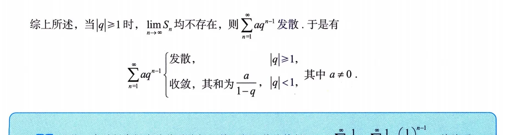
性质16.1—16.4 级数的四条基本性质
四条性质要咬准条件：性质1（线性）收敛 \(+\) 收敛 \(=\) 收敛，且 \(\sum(au_n\pm bv_n)=a\sum u_n\pm b\sum v_n\)；性质2改变有限项不改变敛散性；性质3收敛级数任意加括号仍收敛且和不变——逆否命题"加括号后发散则原级数发散"可用，但"加括号后收敛推不出原级数收敛"，反例 \((a-a)+(a-a)+\cdots=0\) 收敛而 \(\sum(-1)^{n-1}a\) 发散；性质4是全讲的命根子：收敛 \(\Rightarrow \lim\limits_{n\to\infty}u_n=0\)，逆否命题"通项不趋零必发散"是排除发散的第一反应，但通项趋零不能保证收敛。
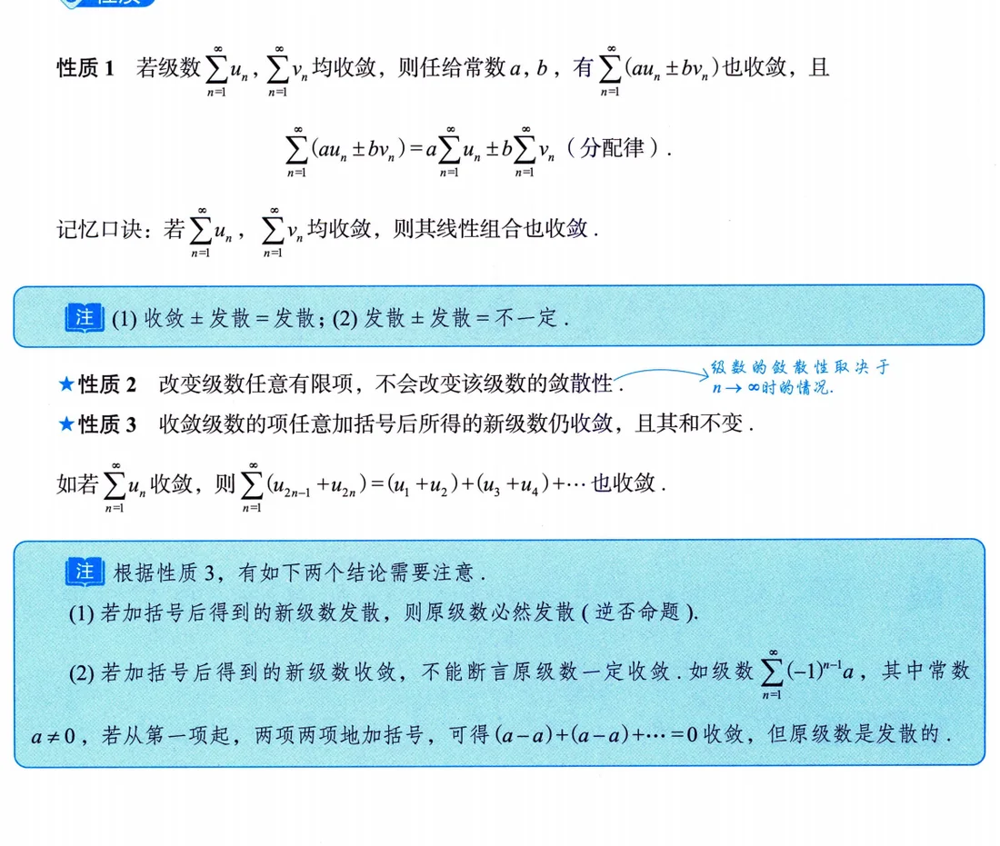
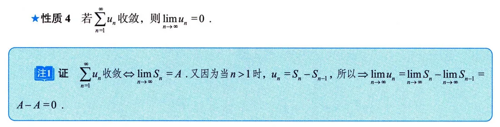
性质4的证明本身就是个常用小工具：\(u_n=S_n-S_{n-1}\ (n>1)\)，"uₙ 的妙用"（印P456）。两个"发散惯犯"要顺带记住：调和级数 \(\sum\dfrac{1}{n}\) 发散，\(\sum\dfrac{1}{n\ln n}\) 也发散（积分判别法一算便知，印P456、P464）。
定理16.2 正项级数收敛原则
若通项 \(u_n\ge 0\)，部分和数列 \(\{S_n\}\) 单调不减，于是：正项级数收敛 \(\Leftrightarrow\) \(\{S_n\}\) 有界。要么收敛到有限正数，要么 \(+\infty\)，没有第三种结局。"有界"只需证有上界——这给"部分和不好算"的题留了活路（例16.3）。
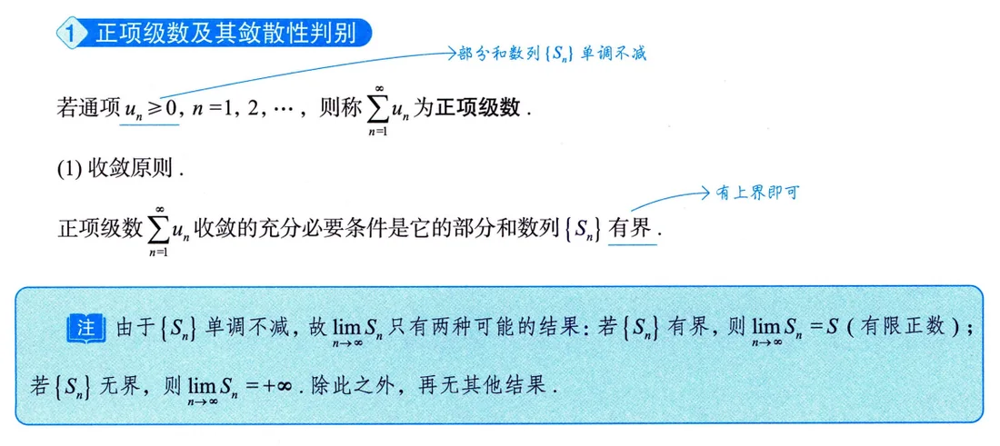
定理16.3 p 级数
\(\sum\dfrac{1}{n^p}\)：\(p\le 1\) 发散，\(p>1\) 收敛，与反常积分 \(\int_1^{+\infty}\dfrac{\mathrm{d}x}{x^p}\) 同敛散。调和级数是 \(p=1\) 的特例。比较判别法就靠它和几何级数当尺子，"在以后的多种场合都会派上用场，考生需牢记"（印P459）。
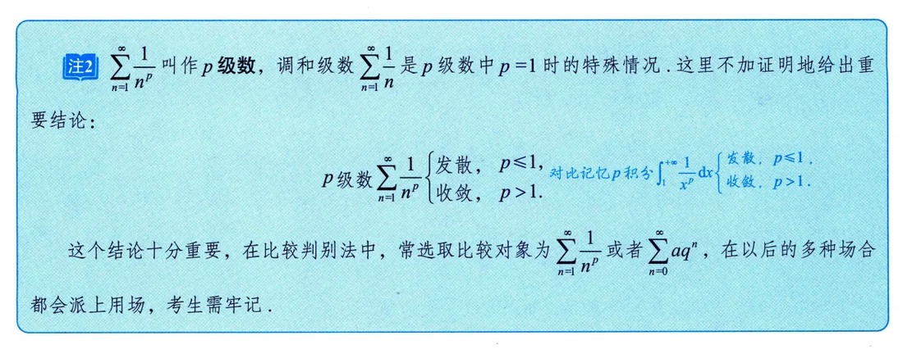
定理16.4 比较判别法及其极限形式
非极限形式：两个正项级数，从某项起 \(u_n\le v_n\)，则"大收敛 \(\Rightarrow\) 小收敛，小发散 \(\Rightarrow\) 大发散"（印P458）。用起来更顺的是极限形式（无穷小比阶）：\(\lim\limits_{n\to\infty}\dfrac{u_n}{v_n}=A\)，①\(A=0\) 时由 \(\sum v_n\) 收敛推 \(\sum u_n\) 收敛；②\(A=+\infty\) 时由 \(\sum v_n\) 发散推 \(\sum u_n\) 发散；③\(0<A<+\infty\)（同阶无穷小）时两者同敛散。
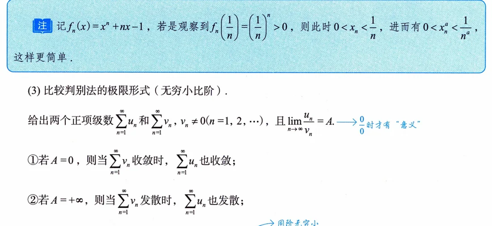
注意：非正项级数不能直接用比较判别法——要先用 \(|u_n|\ge 0\) 转成绝对值级数再比（这是抽象判敛 12 条的第 2 条，印P472）。
定理16.5 比值判别法（达朗贝尔判别法）
正项级数若 \(\lim\limits_{n\to\infty}\dfrac{u_{n+1}}{u_n}=\rho\)，\(\rho<1\) 收敛，\(\rho>1\) 发散。含 \(n!\)、\(n^n\) 的通项基本都靠它。两条注记（印P462）：①\(\rho=1\) 时失效，\(\sum\frac1n\) 与 \(\sum\frac{1}{(n+1)^2}\) 的 \(\rho\) 都是 1 而一散一收；②若从某项起 \(\dfrac{u_{n+1}}{u_n}\ge 1\)（不必取极限），则 \(\{u_n\}\) 单调不减、\(\lim u_n\neq 0\)，直接发散——例16.11 里 \(a=\mathrm{e}\) 的边界讨论用的正是它。
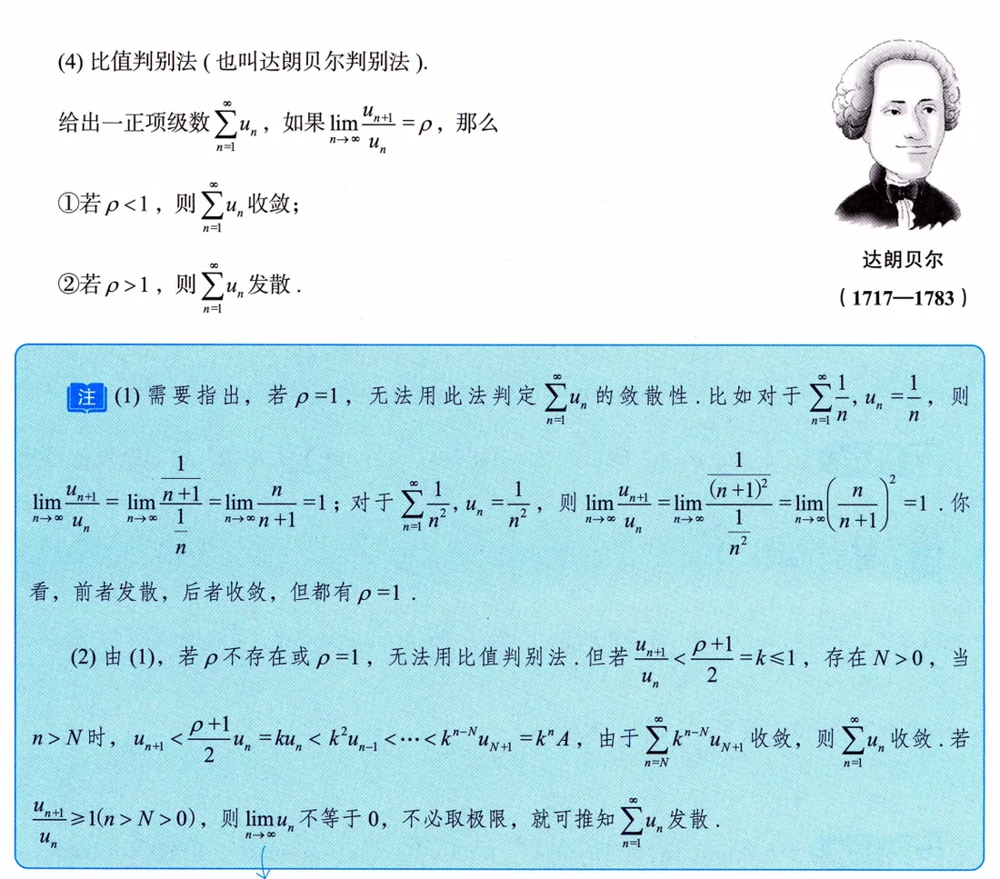
定理16.6 根值判别法（柯西判别法）
正项级数若 \(\lim\limits_{n\to\infty}\sqrt[n]{u_n}=\rho\)，结论同比值法。通项长成 \(\bigl(\cdots\bigr)^n\) 时用它。同样两条注记（印P463）：①\(\rho=1\) 失效（反例同为 \(p\) 级数族）；②若 \(\sqrt[n]{u_n}\ge 1\)，则 \(u_n\ge 1\) 不趋零，不必取极限即知发散。
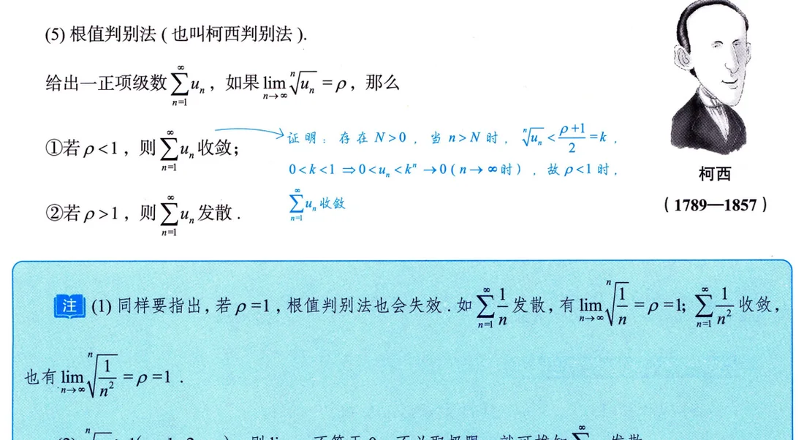
定理16.7 积分判别法
设 \(u_n\) 为正项级数，若存在 \([1,+\infty)\) 上单调减少的非负连续函数 \(f(x)\) 使 \(u_n=f(n)\)，则 \(\sum u_n\) 与 \(\int_1^{+\infty}f(x)\,\mathrm{d}x\) 同敛散（印P464）。常见对照要背：\(\sum\dfrac{1}{n\ln n}\) 发散；\(\sum\dfrac{1}{n^p\ln^q n}\) 在 \(p>1\) 或（\(p=1\) 且 \(q>1\)）时收敛，其余发散。
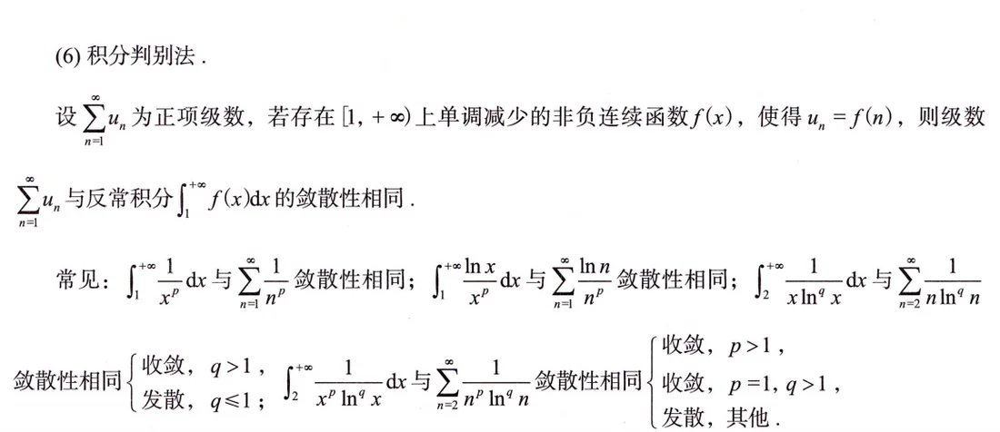
定理16.8 莱布尼茨判别法
交错级数 \(\sum\limits_{n=1}^{\infty}(-1)^{n-1}u_n\ (u_n>0)\)：①\(\{u_n\}\) 单调不增；②\(\lim\limits_{n\to\infty}u_n=0\)——两条齐则收敛（印P465）。单调性怎么验：作差 \(u_{n+1}-u_n\) 与 0 比、作商与 1 比，或连续化 \(u_n=f(n)\) 后看 \(f'(x)\) 的正负。这只是充分条件：单调性不满足时级数照样可能收敛（如 \(\sum(-1)^n\frac{2+(-1)^n}{2^n}\)，拆项处理是正路）。另一条重要注记（印P465 注(3)）：若 \(\sum(-1)^{n-1}u_n\) 收敛，则 \(\sum(-1)^{n-1}u_n=\sum(u_{2n-1}-u_{2n})\)（收敛级数加括号）——例16.17 靠它拆项。
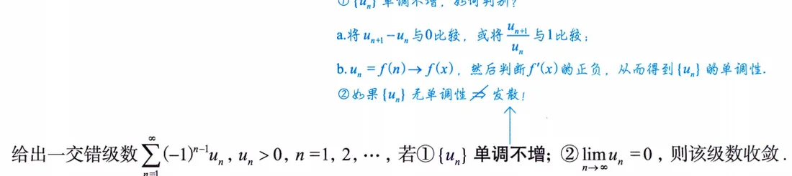
定义16.2 绝对收敛与条件收敛
任意项级数先加绝对值：\(\sum|u_n|\) 收敛称绝对收敛；\(\sum u_n\) 收敛而 \(\sum|u_n|\) 发散称条件收敛——可以理解为"收敛程度没那么高的收敛"（印P467）。绝对收敛必收敛（此时正项级数六种判别法全部可用于 \(\sum|u_n|\)）。判别顺序固定：先看 \(\sum|u_n|\)，发散了再回头看原级数。
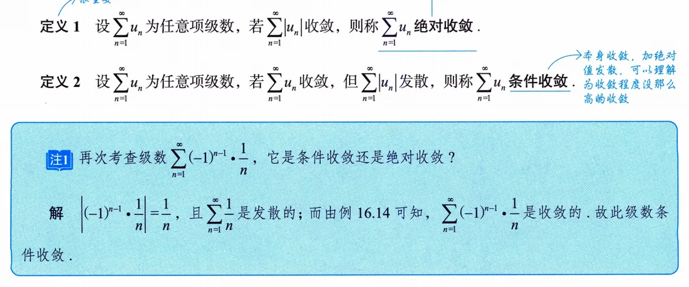
定理16.9 任意项级数的运算法则
做题极常用的几条（印P467—469），证明多走反证法：①绝对 \(+\) 绝对 \(=\) 绝对；②绝对 \(+\) 条件 \(=\) 条件；③条件 \(+\) 条件 \(=\) 收敛（绝对还是条件不定，取 \(v_n=-u_n\) 得绝对收敛、取 \(v_n=u_n\) 得条件收敛）；④条件收敛的交错级数，其全体正项 \(\sum u_{2n-1}\) 与全体负项 \(\sum(-u_{2n})\) 都发散——"条件收敛是由于正项和负项的相互牵拉才收敛的"；⑤若比值/根值判得 \(\sum|u_n|\) 发散（\(\rho>1\)），则 \(\lim|u_n|\neq 0\)，原级数 \(\sum u_n\) 本身发散；⑥交错 \(p\) 级数 \(\sum\dfrac{(-1)^{n-1}}{n^p}\)：\(p>1\) 绝对收敛，\(0<p\le 1\) 条件收敛。
定理16.10 抽象级数判敛 12 条总结
原书在例16.20 之后专门做了示范性总结（印P471—472），设 \(\sum u_n\) 是任意项级数，12 条中可直接背下的主干结论：
- 若 \(\sum u_n\)、\(\sum v_n\) 都收敛，则 \(\sum(u_n\pm v_n)\) 收敛（两个收敛级数加加减减必收敛）；
- 若 \(\sum|u_n|\) 收敛，则 \(\sum u_n\) 收敛；若 \(\sum u_n\) 发散，则 \(\sum|u_n|\) 发散（逆否）；
- 若 \(\sum u_n\) 收敛，则 \(\sum|u_n|\) 不定（反例：\(\sum\frac{(-1)^{n-1}}{n}\) 收敛但 \(\sum\frac1n\) 发散）；
- 若 \(\sum u_n\) 收敛，则 \(\sum(-1)^n u_n\) 不定（取 \(u_n=\frac{(-1)^{n-1}}{n}\) 即发散）；
- 若 \(\sum u_n\) 收敛，则偶数项级数 \(\sum u_{2n}\)、奇数项级数 \(\sum u_{2n-1}\) 均不定；
- 若 \(\sum u_n\) 收敛，则 \(\sum(u_{2n-1}+u_{2n})\) 收敛（加括号，和不变）；
- 若 \(\sum u_n\) 收敛，则 \(\sum(u_{2n-1}-u_{2n})\) 不定（反例：\(\sum\frac{(-1)^{n-1}}{n}=1-\frac12+\frac13-\cdots\) 收敛，但 \(u_{2n-1}-u_{2n}=\frac{1}{2n-1}+\frac{1}{2n}\sim\frac1n\)，发散）；
- 正项级数 \(\sum u_n\) 收敛时，\(\sum u_n^2\)、\(\sum u_nv_n\)（\(\sum v_n\) 亦正项收敛）都收敛（例16.5、例16.6）；但任意项收敛推不出 \(\sum u_n^2\) 收敛（\(u_n=\frac{(-1)^{n-1}}{\sqrt n}\)）。
其余条目是幂次、除 \(\ln n\)、乘积等通项变形的敛散组合与配套反例，完整 12 条连同反例看下面两张截图——"看到收敛的级数，不要想当然以为是正项的"（原书边注）。这份总结的用法是"对号入座"：看到抽象选项，先在 12 条里找影子，找不到的当场构造 \(u_n=\frac{(-1)^{n-1}}{n}\) 或 \(\frac{(-1)^{n-1}}{\sqrt n}\) 型反例。
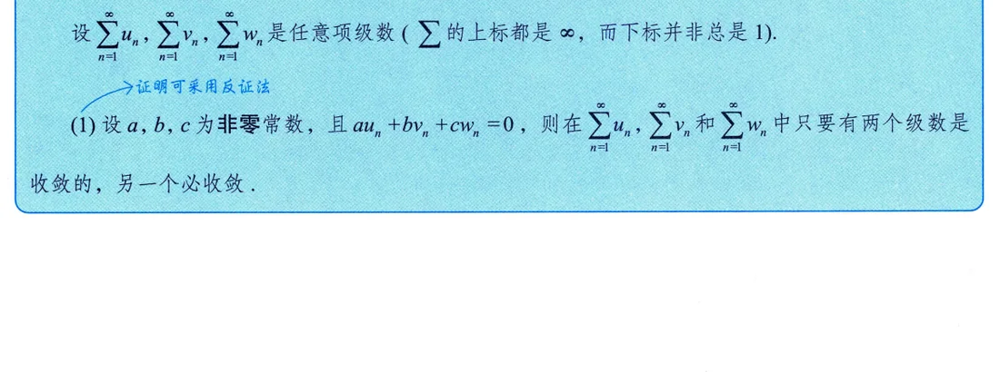
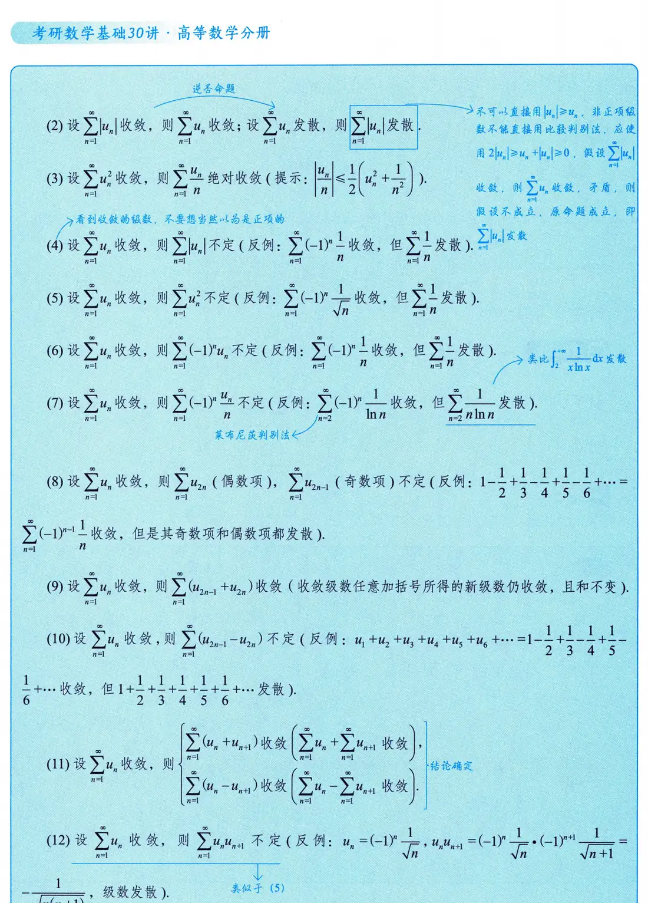
定义16.3 函数项级数、幂级数、收敛点与收敛域
函数列 \(\{u_n(x)\}\) 定义在区间 \(I\) 上，\(\sum u_n(x)\) 叫函数项级数；取定 \(x=x_0\) 后成为数项级数，收敛则 \(x_0\) 叫收敛点，全体收敛点构成收敛域——收敛域就是和函数的定义域（印P474—475）。一般项是 \(n\) 次幂函数 \(a_nx^n\) 或 \(a_n(x-x_0)^n\) 时叫幂级数，后者为一般形。原书在这里顺势点破与泰勒公式的关系：任意阶可导函数都能写成 \(\sum\dfrac{f^{(n)}(x_0)}{n!}(x-x_0)^n\)，\(x^n\) 当"基"（线性代数概念），不同系数搭配出不同函数——幂级数是泰勒公式的推广与呼应，展开式具有唯一性（印P474—475）。
定理16.11 阿贝尔定理
\(\sum a_nx^n\) 在 \(x_1\neq 0\) 处收敛，则 \(|x|<|x_1|\) 内绝对收敛；在 \(x_2\neq 0\) 处发散，则 \(|x|>|x_2|\) 上发散（印P476）。收敛点往外扩、发散点往里收，必然夹出一个分界半径——但端点 \(x=\pm R\) 处阿贝尔定理管不着，必须代回去按数项级数认真判断，"这两个端点是考研数学中必考无疑的"。
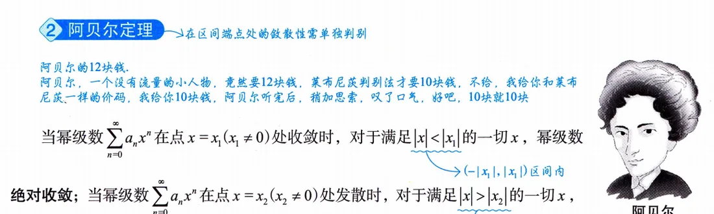
定义16.4 收敛半径与"由点定径"三情况
若 \(R\ge 0\) 满足：\(|x|<R\) 时绝对收敛、\(|x|>R\) 时发散，则 \(R\) 叫收敛半径，\((-R,R)\) 叫收敛区间（印P476）。已知 \(\sum a_n(x-x_0)^n\) 在某点 \(x_1\) 的敛散性定 \(R\)（印P477）：①在 \(x_1\) 处收敛 \(\Rightarrow R\ge|x_1-x_0|\)；②在 \(x_1\) 处发散 \(\Rightarrow R\le|x_1-x_0|\)；③在 \(x_1\) 处条件收敛 \(\Rightarrow R=|x_1-x_0|\)（重要考点，端点恰好落在收敛半径上）。
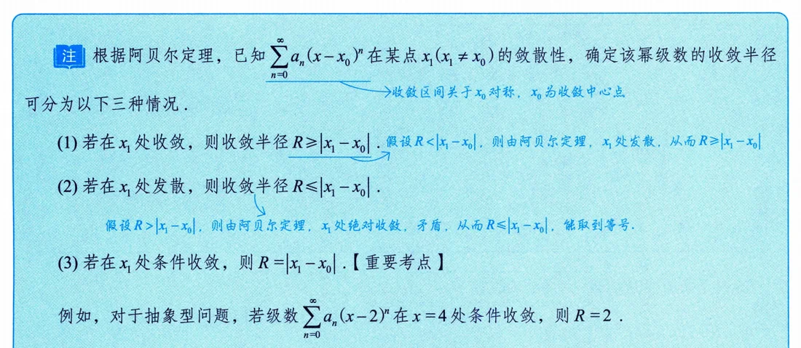
定理16.12 收敛域的求法
具体型幂级数分两类（印P477—478）：不缺项 \(\sum a_nx^n\)：\(\rho=\lim\limits_{n\to\infty}\left|\dfrac{a_{n+1}}{a_n}\right|\)（或 \(\lim\sqrt[n]{|a_n|}\)），\(R=1/\rho\)，\(\rho=0\) 时 \(R=+\infty\)、\(\rho=+\infty\) 时 \(R=0\)（注例1 得 \((-\infty,+\infty)\)，注例2 只在 \(x=0\) 收敛）；缺项幂级数或一般函数项级数 \(\sum u_n(x)\)："釜底抽薪"——加绝对值成正项级数，直接用比值（根值）判别法，令 \(\lim\limits_{n\to\infty}\left|\dfrac{u_{n+1}(x)}{u_n(x)}\right|<1\) 解出收敛区间，再单独讨论端点。无论哪种方法都别忘了端点。另注意（印P479 注2）：\(\lim|a_{n+1}/a_n|\) 可能不存在（如 \([3+(-1)^n]^n\) 型系数），此时拆奇、偶项分别求半径取小者（习题16.12）。
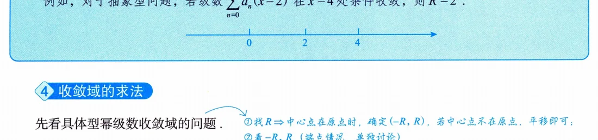
定理16.13 抽象幂级数的收敛域（平移/因式/逐项求导积分）
已知 \(\sum a_n(x-x_0)^n\) 敛散性、讨论相关级数（印P479 注3）：①\((x-x_0)^n\) 层面的转化靠初等变形——平移收敛区间、提出或乘以因式 \((x-x_0)\)；②\(a_n\) 层面的转化靠微积分变形——逐项求导、逐项积分。三种操作下收敛半径都不变，收敛域要具体问题具体分析：提因式/平移不改收敛域的可能结构；逐项求导收敛域可能缩小；逐项积分收敛域可能扩大（端点敛散性可能改变）。
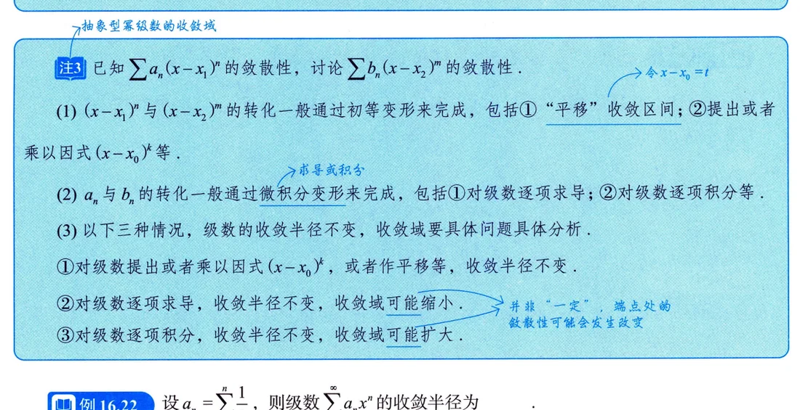
定理16.14 幂级数的运算法则与柯西乘积
\(\sum a_nx^n\)、\(\sum b_nx^n\) 的收敛半径分别为 \(R_1,R_2\)：数乘 \(\sum ka_nx^n=k\sum a_nx^n\)；和差 \(\sum(a_n\pm b_n)x^n\) 的收敛半径 \(R\ge\min(R_1,R_2)\)——当 \(R_1=R_2\) 时 \(R\) 可能变大，例如 \((1+2^n)x^n+(1-2^n)x^n=2x^n+2x^{n+1}+\cdots\) 收敛半径从 1 变大，"由此可见发散级数+发散级数是有可能收敛的"（印P483）；柯西乘积 \(\left(\sum a_nx^n\right)\!\cdot\!\left(\sum b_nx^n\right)=\sum\limits_{n=0}^{\infty}\left(\sum\limits_{i=0}^{n}a_ib_{n-i}\right)x^n\)，收敛半径 \(R=\min(R_1,R_2)\)。
定理16.15 和函数的性质（连续、逐项积分、逐项求导）
\(S(x)=\sum a_nx^n\)：①在收敛域 \(I\) 上连续；若级数在端点 \(x=R\)（或 \(-R\)）处收敛，则 \(S(x)\) 在该端点单侧连续（\(\lim\limits_{x\to R^-}S(x)=S(R)\)）；②在收敛域上可积，"和的积分=积分的和"：\(\int_0^xS(t)\,\mathrm{d}t=\sum\dfrac{a_n}{n+1}x^{n+1}\)，收敛半径不变、收敛域可能扩大；③在收敛区间 \((-R,R)\) 内可导，"和的求导=求导的和"：\(S'(x)=\sum na_nx^{n-1}\)，收敛半径不变、收敛域可能缩小（印P484—485）。
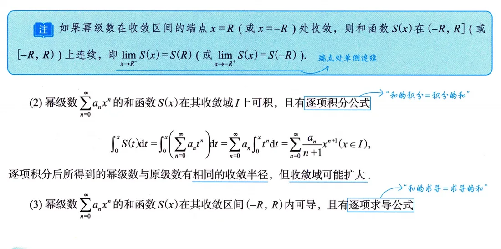
定理16.16 求和函数的突破口与两个必背公式
先求收敛域，然后看 \(n\) 的位置（印P488）：①\((an+b)\) 在分母上——先导后积（例16.30、16.32）；②\((an+b)\) 在分子上——先积后导（例16.31）。先导后积时务必写 \(S(x)=S(x_0)+\int_{x_0}^xS'(t)\,\mathrm{d}t\)，下限 \(x_0\) 取展开中心（\(x_0=0\) 或 \(x_0=x_0\)），因为中心点处级数必收敛。两个必背公式：\(\sum\limits_{n=1}^{\infty}\dfrac{x^n}{n}=-\ln(1-x)\ (-1\le x<1)\)；\(\sum\limits_{n=1}^{\infty}nx^{n-1}=\dfrac{1}{(1-x)^2}\ (|x|<1)\)。由后者再求导可得 \(\sum n(n-1)x^{n-2}=\dfrac{2}{(1-x)^3}\)、\(\sum n(n-1)(n-2)x^{n-3}=\dfrac{6}{(1-x)^4}\)，系数为 \(n\) 的 3 次多项式时用线性组合拼（印P488—489）。
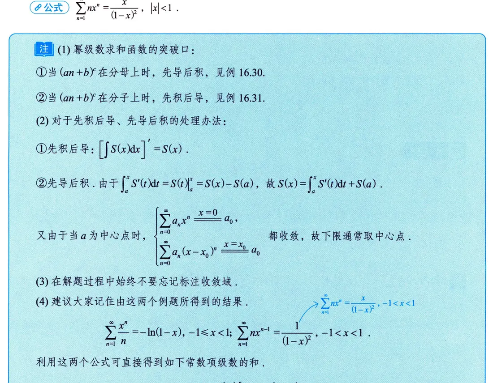
定理16.17 重要展开式（7 个）
\(f(x)\) 在 \(x_0\) 处的泰勒级数为 \(\sum\dfrac{f^{(n)}(x_0)}{n!}(x-x_0)^n\)，\(x_0=0\) 时叫麦克劳林级数。展开式有唯一性（\(a_n=\frac{f^{(n)}(x_0)}{n!}\)），所以实际都用间接法：变量代换、四则运算、逐项求导、逐项积分。下表连收敛域一起一字不差背下来（印P485）：
| 函数 | 展开式 | 收敛域 |
|---|---|---|
| \(\mathrm{e}^x\) | \(\sum\dfrac{x^n}{n!}\) | \((-\infty,+\infty)\) |
| \(\dfrac{1}{1+x}\) | \(\sum(-1)^nx^n\) | \((-1,1)\) |
| \(\dfrac{1}{1-x}\) | \(\sum x^n\) | \((-1,1)\) |
| \(\ln(1+x)\) | \(\sum(-1)^{n-1}\dfrac{x^n}{n}\) | \((-1,1]\) |
| \(\sin x\) | \(\sum(-1)^n\dfrac{x^{2n+1}}{(2n+1)!}\) | \((-\infty,+\infty)\) |
| \(\cos x\) | \(\sum(-1)^n\dfrac{x^{2n}}{(2n)!}\) | \((-\infty,+\infty)\) |
| \((1+x)^\alpha\) | \(1+\alpha x+\dfrac{\alpha(\alpha-1)}{2!}x^2+\cdots\) | 随 \(\alpha\) 分四种情况 |
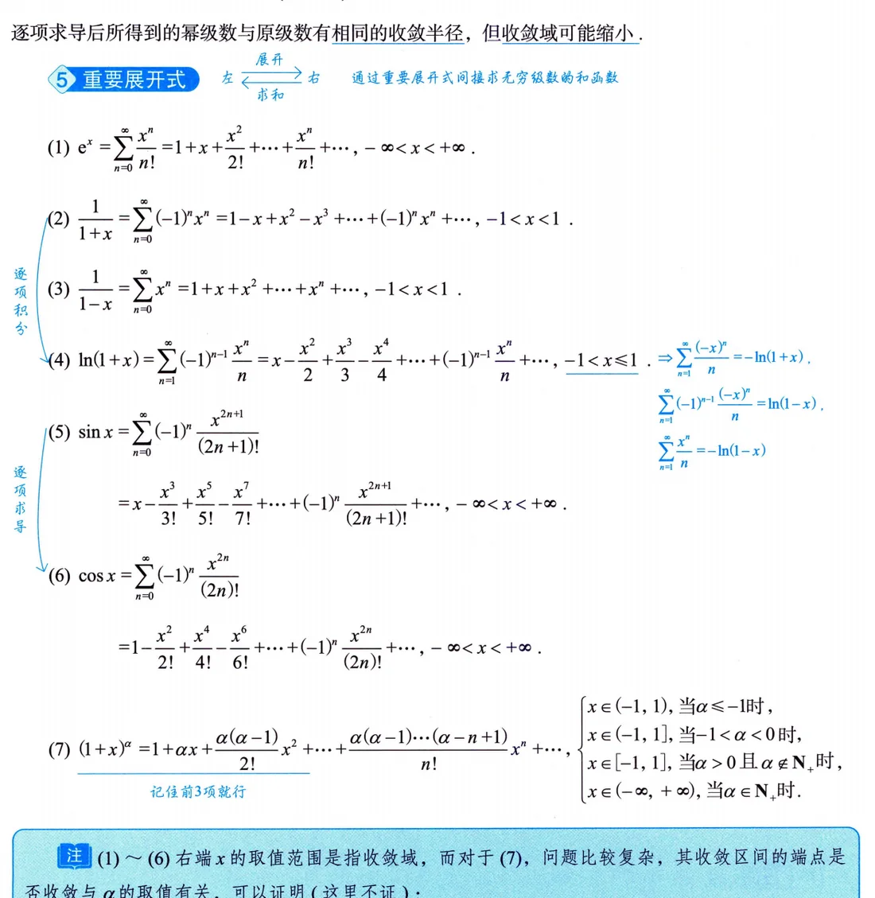
\((1+x)^\alpha\) 的端点情况（记住前 3 项即可，印P485）：\(\alpha\le-1\) 时 \((-1,1)\)；\(-1<\alpha<0\) 时 \((-1,1]\)；\(\alpha>0\) 且 \(\alpha\notin\mathbb{N}_+\) 时 \([-1,1]\)；\(\alpha\in\mathbb{N}_+\) 时 \((-\infty,+\infty)\)。
定理16.18 展开式在端点的检验法与小结 8 式
展开式在收敛区间内部可逐项求导、逐项积分，但在端点是否成立要查两条（印P494 注）：端点处级数收敛 + 被展开函数在该端点单侧连续，两条都满足才能把端点写进展开域（例16.37 的 \(x=-1\) 成立、\(x=1\) 不成立的完整示范）。原书把常用展开式整理成"小结 8 式"并标注每个函数的做题标志（印P494）：分母有 \(n\) 往 \(\ln(1+x)\) 想；分母有 \(2n\) 往 \(\ln\frac{1+x}{1-x}\) 想；分母是奇数且带 \((-1)^n\) 往 \(\arctan x\) 想；看到阶乘 \(n!\) 往 \(\mathrm{e}^x\) 想；偶数阶乘看前面有无 \((-1)^n\) 分别考虑 \(\dfrac{\mathrm{e}^x+\mathrm{e}^{-x}}{2}\)（悬链线）与 \(\cos x\)；奇数阶乘看符号分别考虑 \(\sin x\) 与 \(\cos x\)。
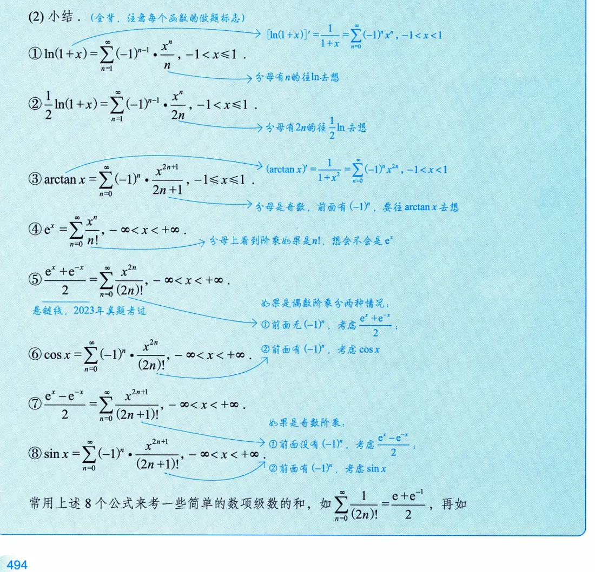
用这 8 个公式可以直接算数项级数的和，例如（印P494—495）：\(\sum\limits_{n=0}^{\infty}\dfrac{2n+2}{(2n+1)!}=\sum\dfrac{(2n+1)+1}{(2n+1)!}=\sum\dfrac{1}{(2n)!}+\sum\dfrac{1}{(2n+1)!}=\cos 1+\sin 1\)——"分母是 \((2n+1)!\)，所以分子折成 \(2n+1+1\)"。
定义16.5 傅里叶级数（周期 \(2l\)，仅数学一）
设 \(f(x)\) 是周期 \(2l\) 的周期函数且在 \([-l,l]\) 上可积，系数公式是记背水平的考查（印P495）：
\[a_n=\frac{1}{l}\int_{-l}^{l}f(x)\cos\frac{n\pi x}{l}\,\mathrm{d}x\ (n=0,1,2,\cdots),\qquad b_n=\frac{1}{l}\int_{-l}^{l}f(x)\sin\frac{n\pi x}{l}\,\mathrm{d}x\ (n=1,2,\cdots),\]
级数 \(\dfrac{a_0}{2}+\sum\limits_{n=1}^{\infty}\left(a_n\cos\dfrac{n\pi x}{l}+b_n\sin\dfrac{n\pi x}{l}\right)\) 记作 \(f(x)\sim S(x)\)，"\(\sim\)"读作"展开为"。\(a_0\) 与 \(a_n\) 的关系（\(a_0\) 是 \(a_n\) 公式取 \(n=0\) 的 2 倍出现在级数里的 \(\frac{a_0}{2}\)）别弄丢。傅里叶级数不需要 \(n\) 阶可导，一般要求函数具有周期性——这是它和幂级数展开条件的本质区别（印P495）。
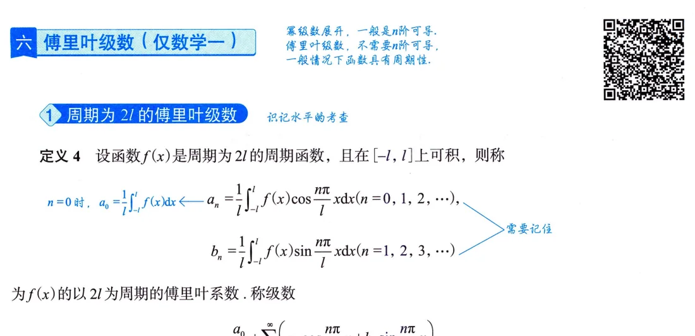
定理16.19 狄利克雷收敛定理
\(f(x)\) 以 \(2l\) 为周期且可积，在 \([-l,l]\) 上①连续或只有有限个第一类间断点、②至多有限个极值点，则傅里叶级数处处收敛，和函数
\[S(x)=\begin{cases}\dfrac{f(x-0)+f(x+0)}{2}, & x\text{ 为间断点},\\[4pt] f(x), & x\text{ 为连续点},\end{cases}\qquad x=\pm l\text{ 处收敛于}\ \dfrac{f(-l+0)+f(l-0)}{2}.\]
一句话：\(S(x)\) 永远收敛于"左极限加右极限除以 2"；因为 \(f\) 是周期函数，\(-l\) 处的右极限就是 \(l\) 处的右极限（印P495）。\(S(x)\) 与 \(f(x)\) 不一定相等。
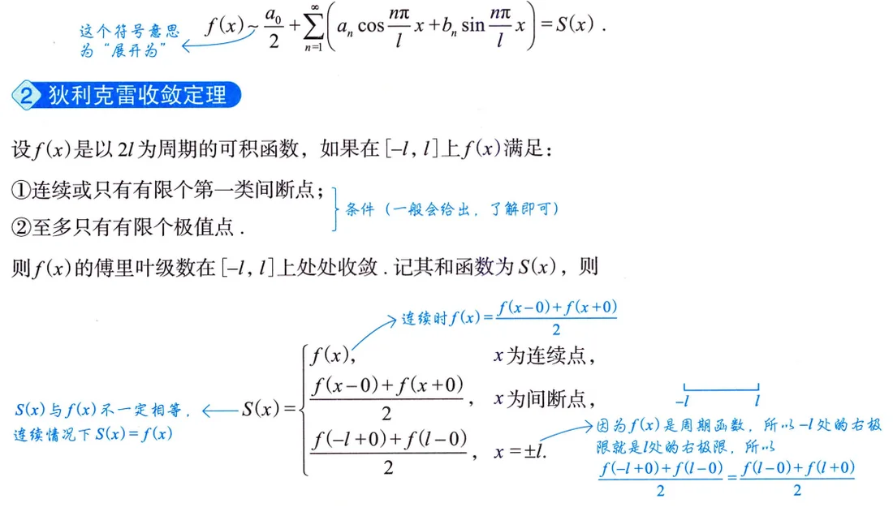
定理16.20 正弦级数、余弦级数与奇偶延拓
\(f\) 为奇函数得正弦级数（只有 \(b_n\)），偶函数得余弦级数（只有 \(a_n\)）（印P496）。只在 \([0,l]\) 上有定义的函数，先延拓后展开（考纲只要求周期奇延拓和周期偶延拓）：奇延拓 \(F(x)=-f(-x)\ (-l\le x<0)\) 配正弦级数，系数 \(b_n=\dfrac{2}{l}\int_0^lf(x)\sin\dfrac{n\pi x}{l}\,\mathrm{d}x\)；偶延拓 \(F(x)=f(-x)\ (-l\le x<0)\) 配余弦级数，系数 \(a_n=\dfrac{2}{l}\int_0^lf(x)\cos\dfrac{n\pi x}{l}\,\mathrm{d}x\)（含 \(a_0\)）。积分区间都是 \([0,l]\)、系数前是 \(\dfrac{2}{l}\)。
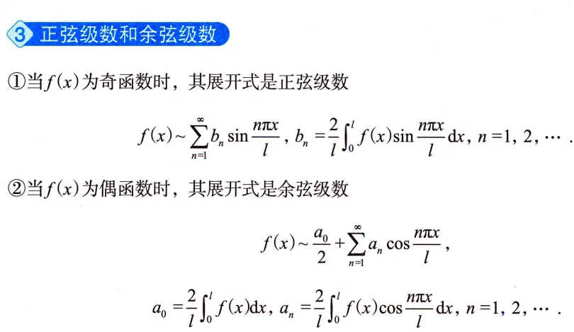
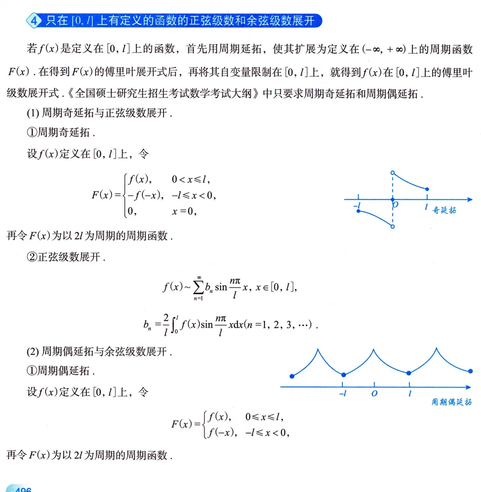
典型例题精讲
原书本讲共 39 道 例16.1—16.39（印P456—498），下面 24 道全格式精讲，其余 15 道在最后速览收全。
例16.1 证明：\(\sum(u_{n+1}-u_n)\) 收敛 \(\Leftrightarrow\) \lim u_n 存在
思路 这是全讲最基础的"工具题"：差数列的级数就是望远镜求和。要点 \(S_n=(u_2-u_1)+(u_3-u_2)+\cdots+(u_{n+1}-u_n)=u_{n+1}-u_1\)（有限项相加，去括号无影响）。故 \(\sum(u_{n+1}-u_n)\) 收敛 \(\Leftrightarrow\) \(\lim S_n\) 存在 \(\Leftrightarrow\) \(\lim u_{n+1}\) 存在 \(\Leftrightarrow\) \(\lim u_n\) 存在（印P456）。应用：判 \(\sum\ln\frac{n+1}{n}\) 散（取 \(u_n=\ln n\)，\(\lim\ln n\) 不存在）；"已知 \(\lim u_n=A\)，则 \(\sum(u_{n+1}-u_n)\) 收敛且和为 \(A-u_1\)"。
例16.3 判别 \(\sum\limits_{n=0}^{\infty}\dfrac{1}{n!}\) 的敛散性
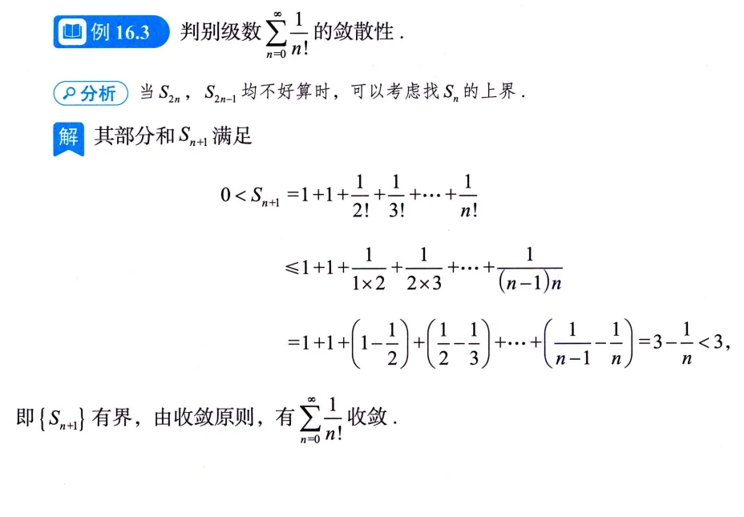
思路 收敛原则的直接应用：算 \(S_n\) 不好算，就证 \(\{S_n\}\) 有上界。要点 放缩 \(\dfrac{1}{k!}\le\dfrac{1}{(k-1)k}=\dfrac{1}{k-1}-\dfrac{1}{k}\ (k\ge2)\)，于是 \(0<S_{n+1}\le 1+1+\left(1-\dfrac12\right)+\cdots+\left(\dfrac{1}{n-1}-\dfrac1n\right)=3-\dfrac1n<3\)。部分和有界，由收敛原则，级数收敛。注 书上加注：这个和就是著名的欧拉数 \(\mathrm{e}\)（在 \(\mathrm{e}^x\) 展开式中令 \(x=1\)，印P458）。
例16.4 选择：判断 \(\sum\ln\left(1+\frac1n\right)\) 与 \(\sum\frac1n\) 的敛散组合
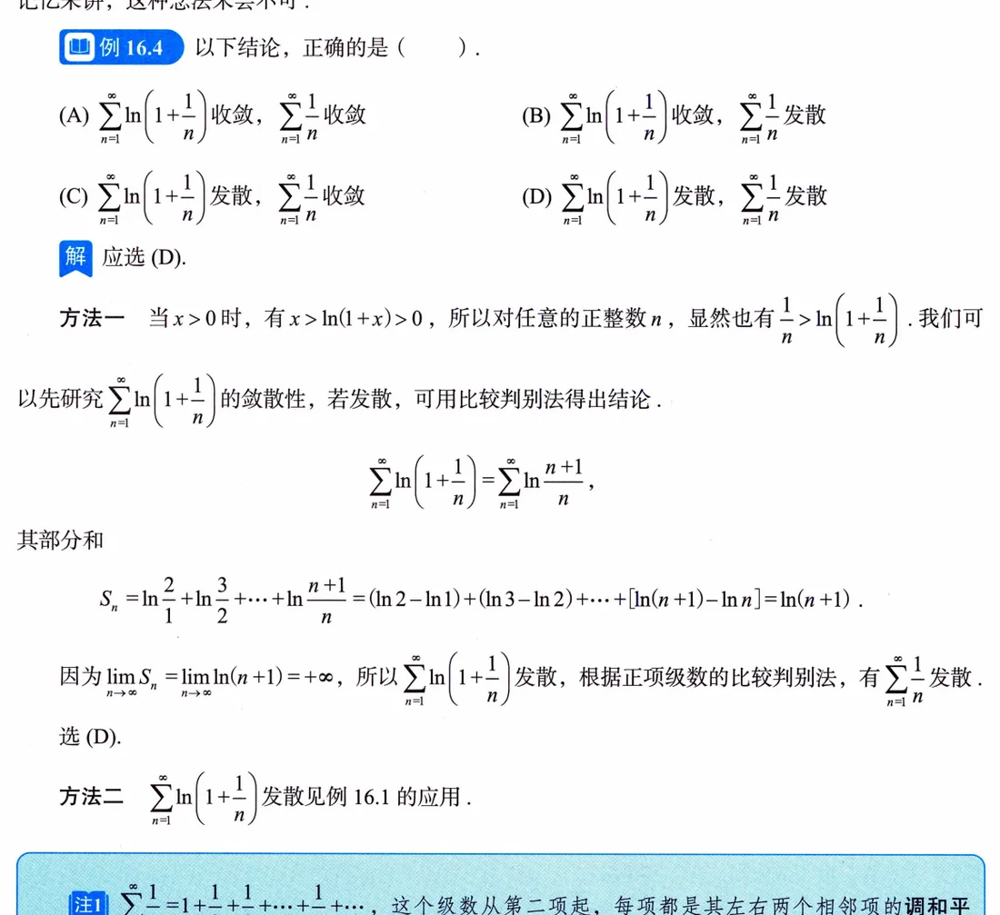
思路 关键不等式：\(x>\ln(1+x)>0\ (x>0)\)。要点 方法一：先研究 \(\sum\limits_{n=1}^{\infty}\ln\dfrac{n+1}{n}\)，其部分和 \(S_n=\ln(n+1)\to+\infty\) 发散；又 \(\dfrac1n>\ln\left(1+\dfrac1n\right)\)，由比较判别法"小的发散 \(\Rightarrow\) 大的发散"得 \(\sum\dfrac1n\) 发散，选 (D)。方法二：用例16.1，取 \(u_n=\ln n\) 立得 \(\sum\ln\frac{n+1}{n}\) 发散。书上还点出：调和级数从第二项起，每项都是其左右相邻两项的调和平均数——"调和"之名的来历（印P458—459）。
例16.5 设正项级数 \(\sum a_n\) 收敛，证明 \(\sum a_n^2\) 收敛
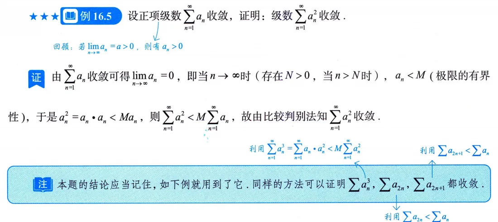
思路 收敛推通项趋零 + 比较判别法，两行完事。要点 \(\sum a_n\) 收敛 \(\Rightarrow\lim a_n=0\)，由极限有界性，存在 \(N\)，\(n>N\) 时 \(a_n<1\)，于是 \(a_n^2=a_n\cdot a_n\le a_n\)；由比较判别法知 \(\sum a_n^2\) 收敛。同样的方法可证 \(\sum a_na_{n+1}\)、\(\sum a_{2n}\)、\(\sum a_{2n-1}\) 都收敛（印P459）。本题结论应当记住：正项收敛 \(\Rightarrow\) 平方收敛，但 \(\sum a_n^2\) 收敛推不出 \(\sum a_n\) 收敛——更要当心：任意项收敛推不出平方收敛（\(u_n=\frac{(-1)^{n-1}}{\sqrt n}\) 时 \(\sum u_n^2=\sum\frac1n\) 发散）。
例16.11 讨论 \(\sum\limits_{n=1}^{\infty}\dfrac{a^n n!}{n^n}\ (a>0)\) 的敛散性
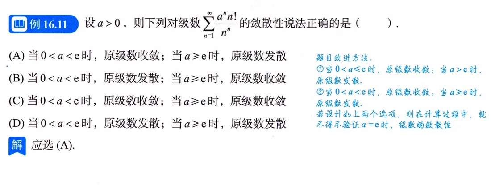
思路 含 \(n!\) 与 \(n^n\)，比值判别法；难点在边界 \(a=\mathrm{e}\)。要点 \(\lim\dfrac{u_{n+1}}{u_n}=\lim a\cdot\dfrac{n^n}{(n+1)^n}=\dfrac{a}{\mathrm{e}}\)。\(0<a<\mathrm{e}\) 时收敛；\(a>\mathrm{e}\) 时发散；\(a=\mathrm{e}\) 时比值 \(\dfrac{u_{n+1}}{u_n}=\dfrac{\mathrm{e}}{(1+1/n)^n}>1\)（因 \((1+1/n)^n\) 单调增加趋于 \(\mathrm{e}\) 而恒小于 \(\mathrm{e}\)），故 \(\{u_n\}\) 单调增加，\(\lim u_n\neq0\)，由必要条件发散。综上 \(0<a<\mathrm{e}\) 收敛、\(a\ge\mathrm{e}\) 发散，选 (A)。注 这道题的价值就在 \(a=\mathrm{e}\)：\(\rho=1\) 失效时退回"\(\frac{u_{n+1}}{u_n}\ge1\) 则通项不趋零"（印P462—463）。
例16.16 判别 \(\sum\limits_{n=2}^{\infty}\dfrac{(-1)^n}{\sqrt n+(-1)^n}\) 的敛散性
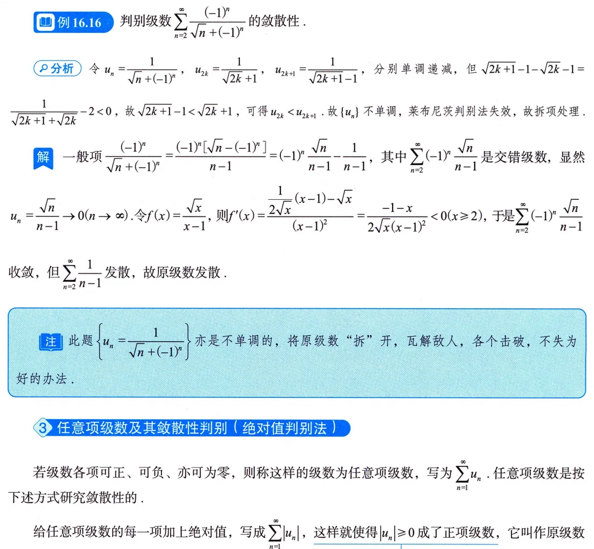
思路 验证发现 \(\{u_n\}\) 不单调（\(u_{2k}>u_{2k+1}\) 不成立），莱布尼茨失效——拆项。要点 有理化：\(\dfrac{(-1)^n}{\sqrt n+(-1)^n}=(-1)^n\dfrac{\sqrt n-(-1)^n}{n-1}=(-1)^n\dfrac{\sqrt n}{n-1}-\dfrac{1}{n-1}\)。前一个交错级数按莱布尼茨收敛（令 \(f(x)=\dfrac{\sqrt x}{x-1}\)，\(f'(x)=\dfrac{-(x+1)}{2\sqrt x\,(x-1)^2}<0\ (x\ge2)\)，且 \(\lim f=0\)），后一个 \(\sum\dfrac{1}{n-1}\) 发散，收敛 \(+\) 发散 \(=\) 发散，故原级数发散（印P466）。注 "单调性不满足"不等于发散，本题拆开后一半收敛一半发散才是发散；"瓦解敌人，各个击破"是交错级数的通用破法。
例16.17 已知 \(\sum(-1)^{n-1}u_n\) 条件收敛（\(u_n>0\)），判 \(\sum(u_{2n}-2u_{2n-1})\)
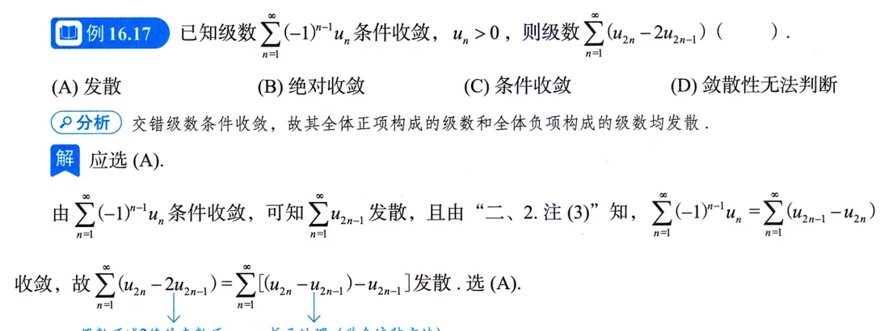
思路 条件收敛 \(\Rightarrow\) 正项全体、负项全体都发散；再把待判级数往这两个已知敛散的级数上拆。要点 由条件收敛知 \(\sum u_{2n-1}\) 发散；又由加括号（印P465 注(3)）\(\sum(-1)^{n-1}u_n=\sum(u_{2n-1}-u_{2n})\) 收敛。于是 \(\sum(u_{2n}-2u_{2n-1})=\sum\left[(u_{2n}-u_{2n-1})-u_{2n-1}\right]=\) 收敛 \(-\) 发散 \(=\) 发散，选 (A)（印P469）。"偶数项减 2 倍奇数项——拆开处理，学会这种方法。"
例16.18 判别 \(\sum\sin(n+k)\left(\dfrac{1}{\sqrt n}-\dfrac{1}{\sqrt{n+1}}\right)\)（\(k\) 为常数）
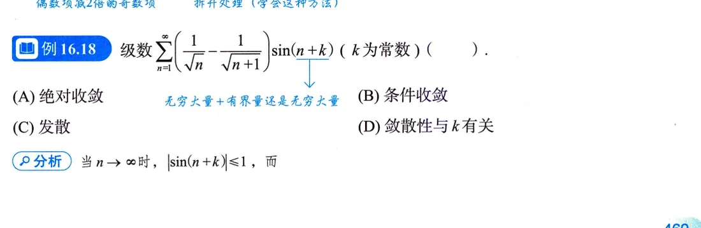
思路 通项是"有界振荡 \(\times\) 衰减因子"，\(\sin(n+k)\le1\) 一刀切掉，剩下证衰减因子的级数收敛。要点 方法一（通分）：\(\dfrac{1}{\sqrt n}-\dfrac{1}{\sqrt{n+1}}=\dfrac{1}{\sqrt n\sqrt{n+1}(\sqrt{n+1}+\sqrt n)}\sim\dfrac{1}{2n^{3/2}}\)，像 \(p\) 级数（\(p=\frac32>1\)），故绝对值级数收敛。方法二（望远镜）：\(\left|\sin(n+k)\right|\left(\dfrac{1}{\sqrt n}-\dfrac{1}{\sqrt{n+1}}\right)\le\dfrac{1}{\sqrt n}-\dfrac{1}{\sqrt{n+1}}\)，而 \(\sum\left(\dfrac{1}{\sqrt n}-\dfrac{1}{\sqrt{n+1}}\right)\) 的部分和 \(S_n=1-\dfrac{1}{\sqrt{n+1}}\to1\) 收敛。故原级数绝对收敛，选 (A)（印P469—470）。注 "无穷大量+有界量还是无穷大量"这类边注帮你想通 \(n+k\to\infty\) 时 \(\sin(n+k)\) 的行为。
例16.20 若 \(\sum u_n\) 收敛，以下级数中必收敛的是
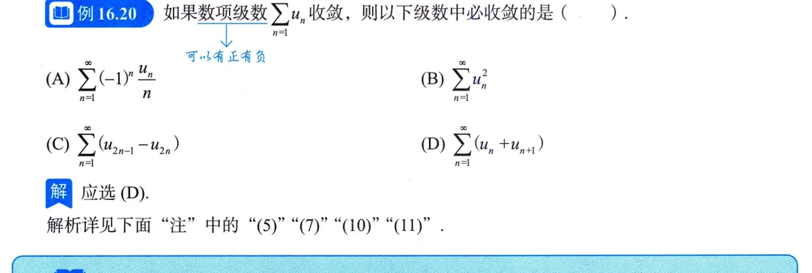
思路 抽象判敛的标准打法：逐项套 12 条总结，套不上就构造 \(u_n=\frac{(-1)^{n-1}}{n}\) 或 \(\frac{(-1)^{n-1}}{\sqrt n}\) 型反例。要点 含 \((-1)^n u_n\)、\(u_n^2\)、\(u_nu_{n+1}\) 一类的选项都能被反例击倒（例如 \(u_n=\frac{(-1)^{n-1}}{\sqrt n}\) 时 \(u_n^2=\frac1n\)、\(u_nu_{n+1}\approx-\frac1n\) 均发散）。只有 \(\sum(u_{2n-1}-u_{2n})\) 是收敛级数加括号（性质3），必收敛，选 (D)（印P471）。注 这道题直接引出了原书的"做题要总结"方法论和 12 条总结（见定理16.10），是本讲的枢纽例题。
例16.21 \(\sum(-1)^{n+1}\dfrac{\sqrt{n+1}-\sqrt n}{n^p}\) 条件收敛，求 \(p\) 的范围
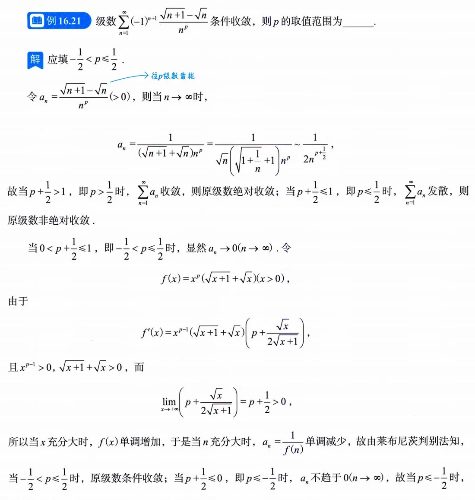
思路 含参交错级数，先往 \(p\) 级数上靠（有理化定阶），再分段讨论。要点 \(a_n=\dfrac{1}{(\sqrt{n+1}+\sqrt n)n^p}\sim\dfrac{1}{2n^{p+\frac12}}\)。\(p>\dfrac12\) 时绝对收敛；\(p\le-\dfrac12\) 时 \(a_n\not\to0\) 发散；当 \(-\dfrac12<p\le\dfrac12\) 时 \(a_n\to0\)，且令 \(f(x)=x^p(\sqrt{x+1}+\sqrt x)\)，可算得 \(x\) 充分大时 \(f'(x)>0\)，故 \(a_n=\frac{1}{f(n)}\) 单调减少，莱布尼茨判收敛。综上应填 \(-\dfrac12<p\le\dfrac12\)（印P473）。注 单调性验证连续化为 \(f(x)\) 看 \(f'(x)\) 符号，是"往 \(p\) 级数靠拢"后的标准第二动作。
例16.23 求 \(\sum\limits_{n=1}^{\infty}\dfrac{(-1)^{n-1}x^{2n}}{2n-1}\) 的收敛域
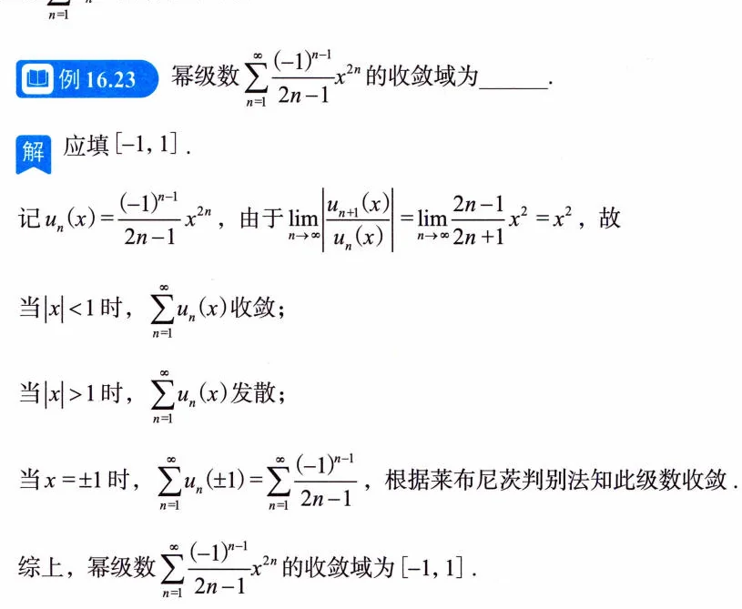
思路 缺项幂级数（只有 \(x^{2n}\)），不能用系数公式，直接对通项加绝对值用比值法。要点 \(\lim\limits_{n\to\infty}\left|\dfrac{u_{n+1}(x)}{u_n(x)}\right|=\lim\dfrac{2n-1}{2n+1}x^2=x^2\)，故 \(|x|<1\) 收敛、\(|x|>1\) 发散；\(x=\pm1\) 时级数成 \(\sum\dfrac{(-1)^{n-1}}{2n-1}\)，由莱布尼茨判别法收敛。收敛域为 \([-1,1]\)（印P480）。注 这个级数的和函数就是 \(x\arctan x\)（见例16.32），前后呼应。
例16.24 \(f(x)=\sum x^n\)，\(g(x)=\int_0^xf(t)\,\mathrm{d}t\)，求两者收敛域
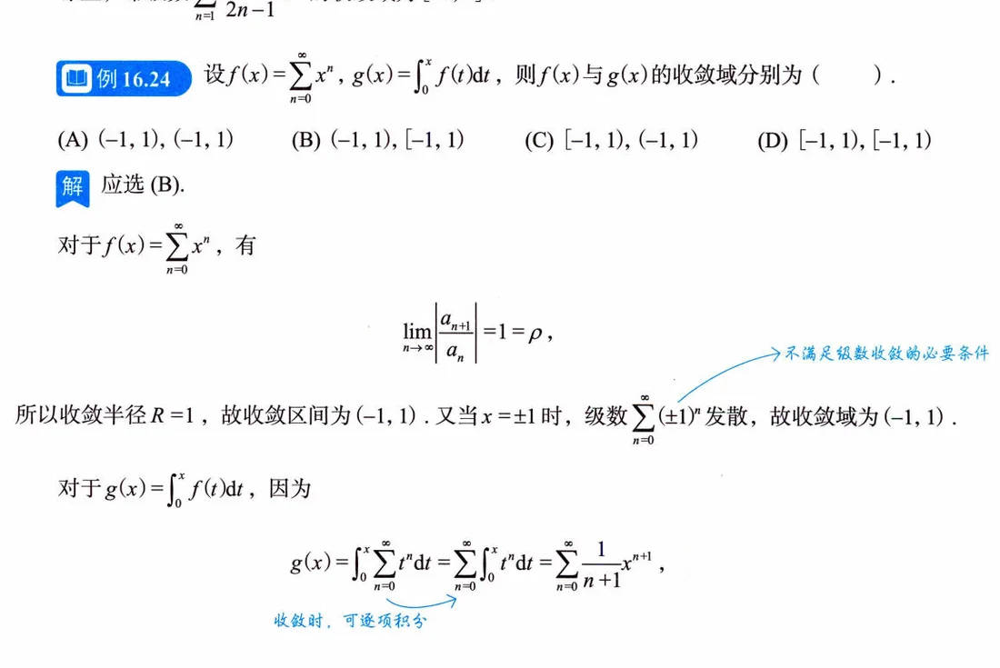
思路 考"逐项积分后收敛域可能扩大"。要点 \(f\) 的收敛域为 \((-1,1)\)（端点 \(\sum(\pm1)^n\) 发散，不满足必要条件）。\(g(x)=\sum\dfrac{x^{n+1}}{n+1}\)，收敛半径仍为 1，但 \(x=-1\) 时 \(\sum\dfrac{(-1)^{n+1}}{n+1}\) 由莱布尼茨收敛，\(x=1\) 时发散，故 \(g\) 的收敛域为 \([-1,1)\)，选 (B)（印P480—481）。注 \(x=-1\) 处"收敛域扩大"正是 \(\sum\dfrac{x^n}{n}=-\ln(1-x)\) 在 \(x=-1\) 成立的原因。
例16.26 \(\sum a_n(x+1)^n\) 在 \(x=1\) 条件收敛，问 \(\sum na_n(x-1)^n\) 在 \(x=2\) 处的敛散
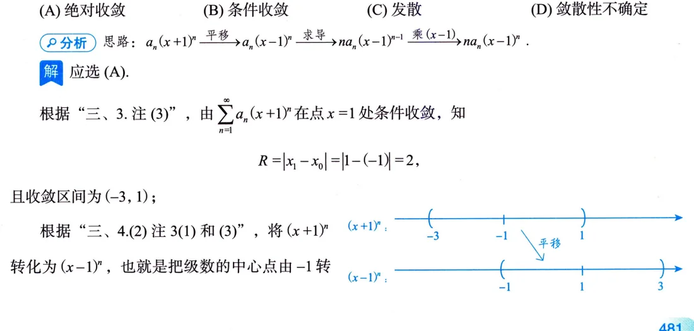
思路 抽象幂级数四连击：条件收敛定半径 \(\to\) 平移 \(\to\) 逐项求导 \(\to\) 乘因式。要点 条件收敛 \(\Rightarrow R=|1-(-1)|=2\)，收敛区间 \((-3,1)\)。平移把中心从 \(-1\) 移到 1，\(\sum a_n(x-1)^n\) 收敛区间 \((-1,3)\)；逐项求导再乘 \((x-1)\) 得 \(\sum na_n(x-1)^n\)，\(R\) 均不变。\(x=2\in(-1,3)\) 在收敛区间内部，幂级数在收敛区间内部必绝对收敛，选 (A)（印P481—482）。注 平移、求导、乘因式都保 \(R\)，端点行为才可能变；"问区间内部点"类题的全部依据就是内部点点绝对收敛。
例16.27 求 \(\sum\limits_{n=2}^{\infty}\left(\dfrac{1}{n\ln n}+\dfrac{1}{2^n}\right)x^n\) 的收敛域
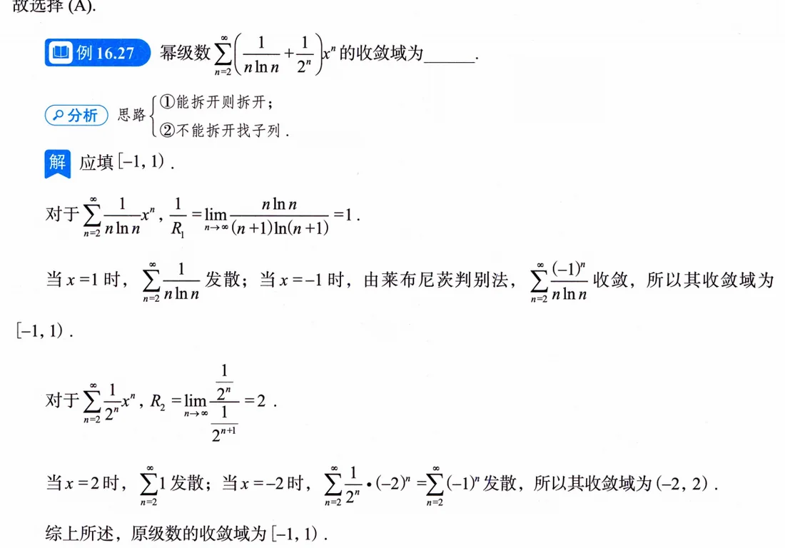
思路 "能拆开则拆开；不能拆开找子列"——拆成两个幂级数分别求收敛域再取交集。要点 对 \(\sum\dfrac{x^n}{n\ln n}\)：\(\rho=\lim\dfrac{n\ln n}{(n+1)\ln(n+1)}=1\)，\(R=1\)；\(x=1\) 时 \(\sum\dfrac{1}{n\ln n}\) 发散（积分判别法），\(x=-1\) 时 \(\sum\dfrac{(-1)^n}{n\ln n}\) 由莱布尼茨收敛，收敛域 \([-1,1)\)。对 \(\sum\dfrac{x^n}{2^n}\)：\(R=2\)，端点 \(\pm2\) 均发散（\(\sum(\pm1)^n\)），收敛域 \((-2,2)\)。综上原级数收敛域为 \([-1,1)\)（印P482）。
例16.28 求 \(\sum\limits_{n=0}^{\infty}\dfrac{x^n}{n+1}\) 的和函数
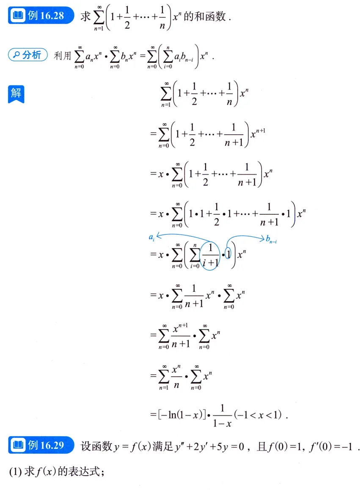
思路 分母是 \(n+1\)，"先导后积"的变形版：提出 \(\frac1x\) 把 \(x^{n+1}\) 凑进去。要点 \(x\neq0\) 时 \(\sum\dfrac{x^n}{n+1}=\dfrac{1}{x}\sum\dfrac{x^{n+1}}{n+1}=\dfrac{1}{x}\left[-\ln(1-x)\right]\)，\(x\in(-1,1)\)（印P486）。补两点：\(x=0\) 处级数和为 1（第 0 项）；\(x=-1\) 处级数收敛且值为 \(\ln2\)，故和函数可延拓到 \([-1,1)\)。
例16.30 求 \(\sum\limits_{n=1}^{\infty}\dfrac{x^n}{n}\) 的和函数
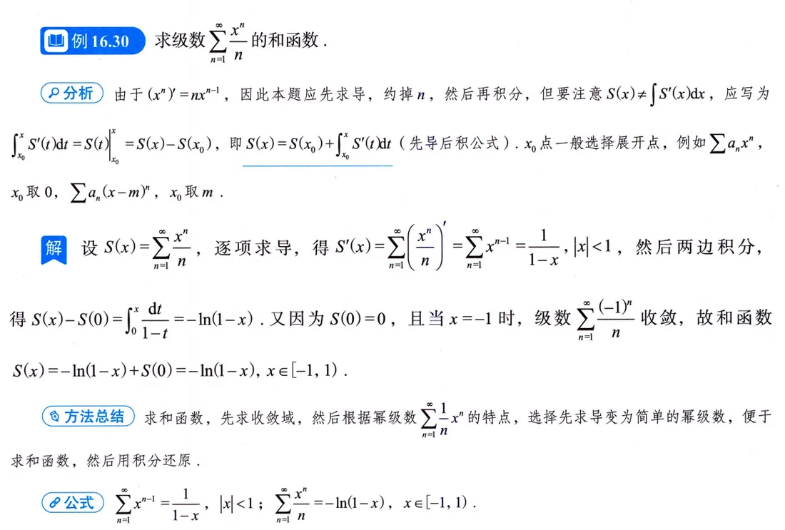
思路 \(n\) 在分母，先导后积（先求导约掉 \(n\)，再积回去），本讲的标准模板。要点 设 \(S(x)=\sum\dfrac{x^n}{n}\)，逐项求导 \(S'(x)=\sum x^{n-1}=\dfrac{1}{1-x}\ (|x|<1)\)；再 \(S(x)=S(0)+\int_0^x\dfrac{\mathrm{d}t}{1-t}=-\ln(1-x)\)。\(x=-1\) 处级数收敛，和函数在端点单侧连续，故 \(S(x)=-\ln(1-x)\)，\(x\in[-1,1)\)（印P487—488）。注 别把 \(S(x)\) 写成不定积分 \(\int S'(x)\mathrm{d}x\)，要写 \(S(x)=S(x_0)+\int_{x_0}^xS'(t)\,\mathrm{d}t\)，下限取展开中心（本题 \(S(0)=0\)）。
例16.31 求 \(\sum\limits_{n=1}^{\infty}nx^n\) 的和函数
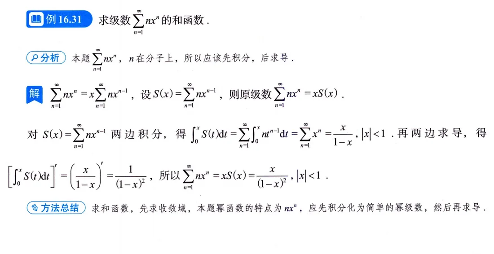
思路 \(n\) 在分子，反过来：先积后导。要点 提出 \(x\)：设 \(S(x)=\sum nx^{n-1}\)，则原级数 \(=xS(x)\)。对 \(S\) 两边积分 \(\int_0^xS(t)\,\mathrm{d}t=\sum x^n=\dfrac{x}{1-x}\ (|x|<1)\)，再两边求导 \(S(x)=\left(\dfrac{x}{1-x}\right)'=\dfrac{1}{(1-x)^2}\)。故 \(\sum nx^n=\dfrac{x}{(1-x)^2}\ (|x|<1)\)（印P487）。这个结果与例16.30 的 \(-\ln(1-x)\) 并列为本讲两大必背公式（印P488）。
例16.32 求 \(\sum\limits_{n=1}^{\infty}\dfrac{(-1)^{n-1}x^{2n}}{2n-1}\) 的和函数
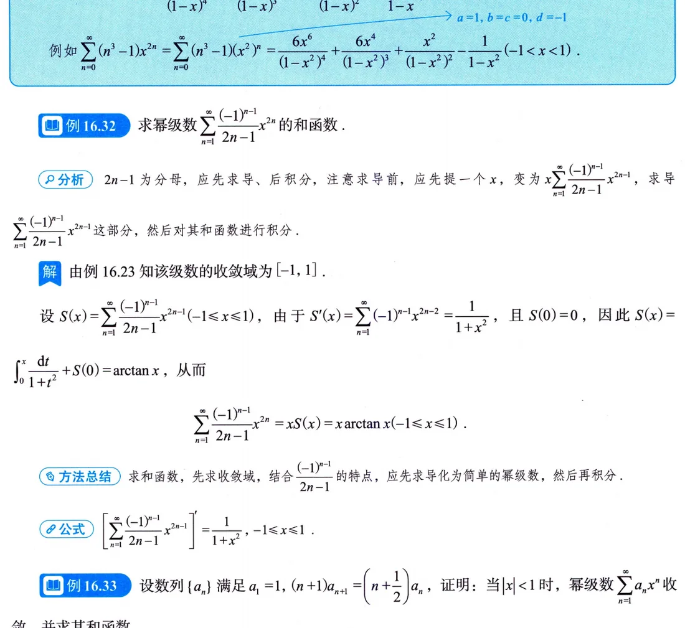
思路 分母是 \(2n-1\)，先提出一个 \(x\)，对 \(x^{2n-1}\) 部分"先导后积"。要点 收敛域 \([-1,1]\)（即例16.23）。设 \(S(x)=\sum\dfrac{(-1)^{n-1}x^{2n-1}}{2n-1}\)，则 \(S'(x)=\sum(-1)^{n-1}x^{2n-2}=\dfrac{1}{1+x^2}\)，\(S(x)=S(0)+\int_0^x\dfrac{\mathrm{d}t}{1+t^2}=\arctan x\)。原级数 \(=xS(x)=x\arctan x\ (-1\le x\le1)\)（印P489）。注 顺手记住派生公式：\(\left[\sum\dfrac{(-1)^{n-1}x^{2n-1}}{2n-1}\right]'=\dfrac{1}{1+x^2}\)，以及 \(x=1\) 时 \(\sum\dfrac{(-1)^{n-1}}{2n-1}=\dfrac{\pi}{4}\)。
例16.33 \(a_1=1\)，\((n+1)a_{n+1}=\left(n+\dfrac12\right)a_n\)，证 \(|x|<1\) 时 \(\sum a_nx^n\) 收敛并求和函数
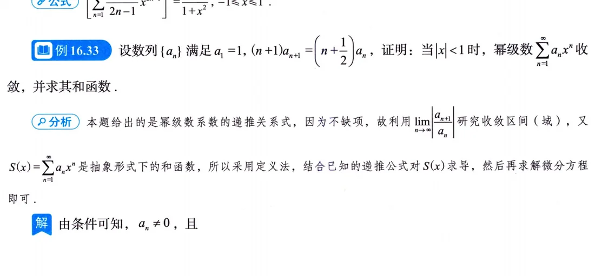
思路 系数以递推式给出：先用比值定收敛半径，再用"和函数的微分方程解法"——对 \(S(x)\) 求导，用递推式建立一阶线性微分方程。要点 由递推，\(\lim\left|\dfrac{a_{n+1}}{a_n}\right|=\lim\dfrac{n+1/2}{n+1}=1\)，\(R=1\)。当 \(|x|<1\) 时设 \(S(x)=\sum\limits_{n\ge1}a_nx^n\)，逐项求导后代入递推式整理得
\[S'(x)-\frac{S(x)}{2(1-x)}=\frac{1}{1-x},\]
按一阶线性方程通解公式（积分因子 \(\sqrt{1-x}\)）解得 \(\sqrt{1-x}\,S(x)=-2\sqrt{1-x}+C\)，代入 \(S(0)=a\) 边值（\(S(0)=0\)）得 \(C=2\)，所以 \(S(x)=\dfrac{2}{\sqrt{1-x}}-2\ (|x|<1)\)（印P489—490）。注 当幂级数是抽象形式但给出递推公式时，考虑求导建立微分方程——该方法也称和函数的微分方程解法。
例16.34 \(a_n=\int_0^1x^n\sqrt{1-x^2}\,\mathrm{d}x\)，\(b_n=\int_0^{\pi/2}\sin^nt\,\mathrm{d}t\)，计算 \(\sum(-1)^n\dfrac{a_n}{b_n}\)
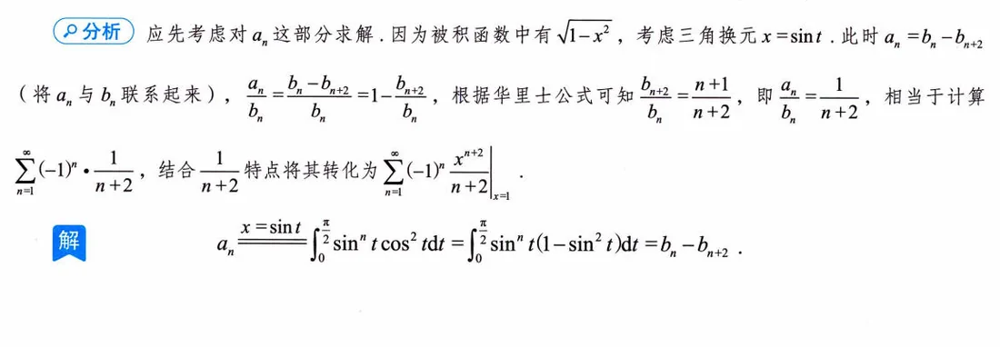
思路 三步走：三角换元把 \(a_n\) 与 \(b_n\) 联系起来 \(\to\) 华里士公式定比值 \(\to\) 包装成幂级数求和。要点 令 \(x=\sin t\)：\(a_n=\int_0^{\pi/2}\sin^nt\cos^2t\,\mathrm{d}t=\int_0^{\pi/2}\sin^nt(1-\sin^2t)\,\mathrm{d}t=b_n-b_{n+2}\)；由华里士公式 \(b_{n+2}=\dfrac{n+1}{n+2}b_n\)，故 \(a_n=\dfrac{b_n}{n+2}\)，\(\dfrac{a_n}{b_n}=\dfrac{1}{n+2}\)，问题化为计算 \(\sum\limits_{n\ge1}\dfrac{(-1)^n}{n+2}\)。当 \(|x|<1\) 时令 \(S(x)=\sum\dfrac{(-1)^nx^{n+2}}{n+2}\)，则 \(S'(x)=\sum(-1)^nx^{n+1}=-\dfrac{x^2}{1+x}\)；于是 \(S(x)=S(0)+\int_0^x\dfrac{-t^2}{1+t}\,\mathrm{d}t\)，有理函数积分拆项 \(\dfrac{-t^2}{1+t}=1-t-\dfrac{1}{1+t}\)，得 \(S(x)=x-\dfrac{x^2}{2}-\ln(1+x)\)。\(x=1\) 处由莱布尼茨判别法收敛，故 \(\sum(-1)^n\dfrac{a_n}{b_n}=\lim\limits_{x\to1^-}S(x)=\dfrac12-\ln2\)（印P490—491）。注 两个条件反射：见 \(\int\sqrt{1-x^2}\,\mathrm{d}x\) 想三角换元；见 \(\int_0^{\pi/2}\sin^nt\,\mathrm{d}t\) 想华里士公式。
例16.36 将 \(f(x)=\ln(1-x+x^2)\) 展开成 \(x\) 的幂级数
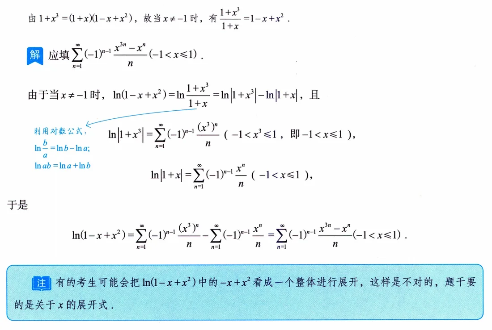
思路 见 \(\ln\) 想对数运算先化积：\(1+x^3=(1+x)(1-x+x^2)\)。要点 当 \(x\neq-1\) 时 \(\ln(1-x+x^2)=\ln\dfrac{1+x^3}{1+x}=\ln(1+x^3)-\ln(1+x)\)，于是
\[f(x)=\sum_{n=1}^{\infty}\frac{(-1)^{n-1}}{n}x^{3n}-\sum_{n=1}^{\infty}\frac{(-1)^{n-1}}{n}x^{n}=\sum_{n=1}^{\infty}\frac{(-1)^{n-1}}{n}\left(x^{3n}-x^{n}\right),\quad -1<x\le1\]
（两个展开式的收敛域 \((-1,1]\) 取交集，印P492—493）。注 原书特别警告：把 \(-x+x^2\) 看成一个整体套 \(\ln(1+u)\) 展开是不对的——题干要的是关于 \(x\) 的展开式，整体代入得到的是 \(x\) 的无穷复杂复合，不是幂级数。
例16.37 将 \(f(x)=\arctan\dfrac{1+x}{1-x}\) 展开成 \(x\) 的幂级数
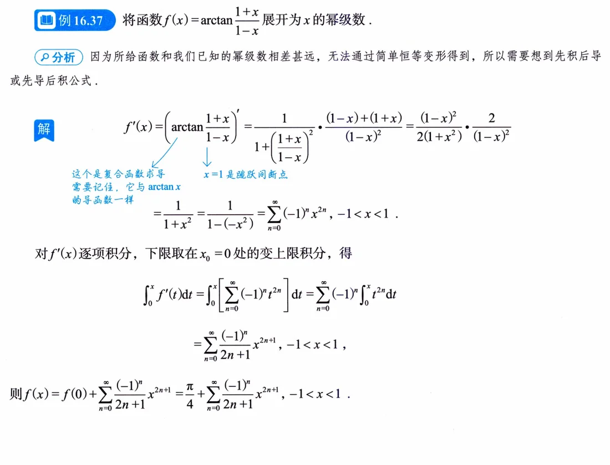
思路 所给函数与已知展开式相差甚远，恒等变形走不通——用"先导后积"：先求导化为分式，再逐项积分。要点 复合函数求导：
\[f'(x)=\frac{\dfrac{2}{(1-x)^2}}{1+\left(\dfrac{1+x}{1-x}\right)^2}=\frac{2}{(1-x)^2+(1+x)^2}=\frac{1}{1+x^2}=\sum_{n=0}^{\infty}(-1)^nx^{2n}\quad(-1<x<1),\]
它与 \(\arctan x\) 的导函数一样（要记住）。对 \(f(x)\) 逐项积分（下限取 0），并注意 \(f(0)=\arctan1=\dfrac{\pi}{4}\)，得
\[f(x)=\frac{\pi}{4}+\sum_{n=0}^{\infty}\frac{(-1)^n}{2n+1}x^{2n+1}.\]
端点检查：\(x=-1\) 处级数收敛且 \(f\) 左连续，展开式成立；\(x=1\) 处级数虽收敛，但 \(f\) 在 \(x=1\) 无定义（是间断点），不能扩。故展开域为 \(-1\le x<1\)（印P493—494）。这道题是"端点检验法"的完整示范。
例16.38 （数一）\(f(x)=\begin{cases}x,&0\le x<\dfrac12,\\ 2-2x,&\dfrac12\le x\le1,\end{cases}\) \(S(x)=\dfrac{a_0}{2}+\sum a_n\cos n\pi x\)，求 \(S\!\left(-\dfrac52\right)\)
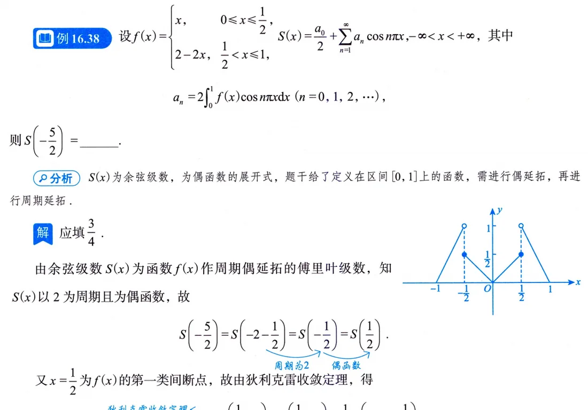
思路 流程固定：利用周期性与奇偶性把点折回 \([0,1]\)，再按狄利克雷定理取值。要点 \(S(x)\) 是偶延拓的余弦级数，周期为 2，故 \(S\!\left(-\dfrac52\right)=S\!\left(-2-\dfrac12\right)=S\!\left(-\dfrac12\right)=S\!\left(\dfrac12\right)\)。\(x=\dfrac12\) 是 \(f\) 的第一类间断点（左右极限 \(\frac12\) 与 \(1\)），由狄利克雷收敛定理 \(S\!\left(\dfrac12\right)=\dfrac{f(\frac12-0)+f(\frac12+0)}{2}=\dfrac{\frac12+1}{2}=\dfrac34\)（印P497）。注 端点 \(x=0,1\)、间断点、连续点三类位置的取值规则要分清；先画偶延拓再周期延拓的草图，点折回来一目了然。
例16.39 （数一）将 \(f(x)=1-x^2\ (0\le x\le\pi)\) 展开成余弦级数，并求 \(\sum\dfrac{(-1)^{n+1}}{n^2}\)
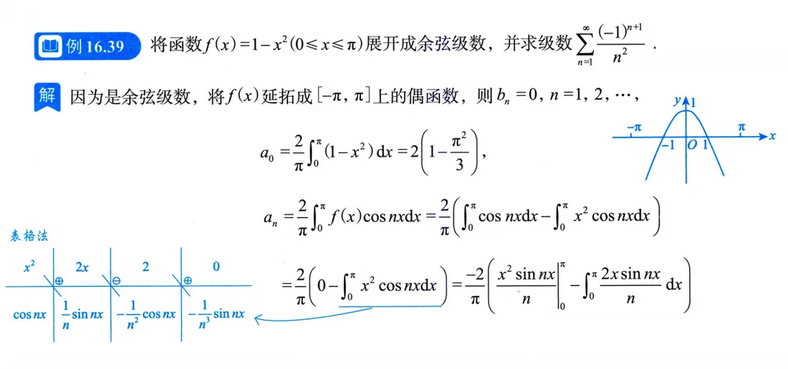
思路 余弦级数 = 偶延拓 + \(b_n=0\)，系数全用 \(\frac{2}{\pi}\int_0^\pi\)；求和值靠"取特殊点"。要点 \(a_0=\dfrac{2}{\pi}\int_0^{\pi}(1-x^2)\,\mathrm{d}x=2-\dfrac{2\pi^2}{3}\)；\(a_n=\dfrac{2}{\pi}\int_0^\pi(1-x^2)\cos nx\,\mathrm{d}x\)，对 \(x^2\cos nx\) 用表格法分部积分两次得 \(a_n=\dfrac{4(-1)^{n+1}}{n^2}\)。故
\[f(x)\sim 1-\frac{\pi^2}{3}+4\sum_{n=1}^{\infty}\frac{(-1)^{n+1}}{n^2}\cos nx\qquad(0\le x\le\pi).\]
\(f\) 在 \([0,\pi]\) 上连续且端点值相容，展开式处处成立。取 \(x=0\)：\(1=1-\dfrac{\pi^2}{3}+4\sum\dfrac{(-1)^{n+1}}{n^2}\)，解得 \(\sum\limits_{n=1}^{\infty}\dfrac{(-1)^{n+1}}{n^2}=\dfrac{\pi^2}{12}\)（印P497—498）。
其余例题速览（原书例16.1—16.39 收全）
- 例16.2（印P456—457）：\(\lim u_n=0\) 且 \(\lim S_{2n}=S\)，证 \(\sum u_n=S\)——由 \(\lim u_{2n+1}=0\) 得 \(\lim S_{2n+1}=\lim(S_{2n}+u_{2n+1})=S\)，奇偶子列同极限则整体极限存在。
- 例16.6（印P459—460）：(1) \(\{u_n\}\) 正项单调减、\(\sum\sqrt{u_nu_{n+1}}\) 收敛 \(\Rightarrow\sum u_n\) 收敛（\(u_{n+1}\le\sqrt{u_nu_{n+1}}\) 比较之）；(2) \(\sum u_n\)、\(\sum v_n\) 正项收敛 \(\Rightarrow\sum u_nv_n\) 收敛（\(u_nv_n\le\frac{u_n^2+v_n^2}{2}\le\frac{u_n+v_n}{2}\)，用基本不等式 \(ab\le\frac{a^2+b^2}{2}\)）。
- 例16.7（印P460）：\(x^n+nx-1=0\) 存在唯一正根 \(0<x_n<1\)（例6.18），证 \(\alpha>1\) 时 \(\sum x_n^\alpha\) 收敛——由方程 \(x_n^n=1-nx_n>0\) 得 \(0<x_n<\frac1n\)，故 \(x_n^\alpha<\frac{1}{n^\alpha}\)。
- 例16.8（印P460—461）：\(\sum\limits_{n\ge2}\sin(n^{-\alpha}\ln n)\ (a>0)\) 收敛 \(\Leftrightarrow\alpha>1\)，选 (D)——\(\sin x\sim x\) 化为 \(\sum\frac{\ln n}{n^\alpha}\)：\(0<\alpha\le1\) 时 \(\frac{\ln n}{n^\alpha}\ge\frac{\ln n}{n}\) 发散，\(\alpha>1\) 时取 \(\varepsilon\) 使 \(\alpha-\varepsilon>1\)，\(\frac{\ln n}{n^\alpha}\le\frac{1}{n^{\alpha-\varepsilon}}\) 收敛。\(n^{-\alpha}\ln n\)、\(\ln(1+n^{-\alpha}\ln n)\) 等均可作变体出现。
- 例16.9（印P461）：\(a_n>0\)、\(\lim n^p(\mathrm{e}^{1/n}-1)a_n=1\)、\(\sum a_n\) 收敛 \(\Rightarrow p\in(2,+\infty)\)——\(\mathrm{e}^{1/n}-1\sim\frac1n\) 给出 \(a_n\sim\frac{1}{n^{p-1}}\)。
- 例16.10（印P461—462）：\(0<a_n\)、\(\cos a_n-a_n=\cos b_n\) 且 \(\sum b_n\) 收敛，证 \(\lim a_n=0\) 与 \(\sum a_n\) 收敛——由 \(\cos b_n=\cos a_n-a_n\) 与 \(\cos\) 的单调性锁出 \(a_n\to0\)；再对 \(\cos a_n-\cos b_n=a_n\) 用拉格朗日中值定理得 \(a_n=(b_n-a_n)\sin\xi_n=o(b_n)\)，比较判别法收编。
- 例16.12（印P463—464）：含 \(\sin(\alpha n)\) 的级数判敛选择题，答案 (A) 收敛——拆成 \(I_1+I_2\) 两个子级数：\(I_1\) 用 \(0\le\sin^2(\alpha n)\le1\) 放缩后与 \(p\) 级数比较，\(I_2\) 用根值判别法（极限 \(<1\)）。
- 例16.13（印P464）：判别 \(\sum\limits_{n\ge2}\dfrac{1}{n\ln n}\)——积分判别法，\(\int_2^{+\infty}\dfrac{\mathrm{d}x}{x\ln x}=\ln\ln x\big|_2^{+\infty}=+\infty\)，发散。
- 例16.14（印P465）：\(\sum\dfrac{(-1)^{n-1}}{n}\)——直接验证 \(u_n>u_{n+1}\)、\(\lim u_n=0\)，莱布尼茨收敛。
- 例16.15（印P465—466）：\(\sum\dfrac{(-1)^n}{\sqrt n-\ln n}\)——令 \(f(x)=\dfrac{1}{\sqrt x-\ln x}\)，算得 \(f'(x)=\dfrac{2-\sqrt x}{2x(\sqrt x-\ln x)^2}<0\ (x>4)\) 且 \(\lim f=0\)，莱布尼茨收敛（单调性"从某项起"成立即可）。
- 例16.19（印P470—471）：\(\sum nu_n\) 绝对收敛、\(\sum v_n\) 条件收敛 \(\Rightarrow\sum u_nv_n\) 绝对收敛，选 (B)——写 \(u_nv_n=(nu_n)\cdot\dfrac{v_n}{n}\)，由 \(\sum v_n\) 收敛知 \(v_n\to0\)，\(n\) 充分大时 \(|v_n|<1\)，于是 \(|u_nv_n|\le|nu_n|\)，与收敛的 \(\sum|nu_n|\) 比较即得；(C)(D)（\(\sum(u_n+v_n)\) 型）用 \(u_n=\frac{(-1)^{n-1}}{n^3}\)、\(v_n=(-1)^n\) 型反例双向排除。
- 例16.22（印P479—480）：\(a_n=\int_0^1(1+x+\cdots+x^n)\,\mathrm{d}x=1+\dfrac12+\cdots+\dfrac{1}{n+1}\)，求 \(\sum a_nx^n\) 的收敛半径——放缩 \(1<a_n<\underbrace{1+1+\cdots+1}_{n+1}=n+1\)，夹逼 \(\sqrt[n]{a_n}\to1\)（习题2.6：\(\lim\sqrt[n]{n}=1\)），\(R=1\)。
- 例16.25（印P481）：已知 \(\sum\dfrac{n!}{n^n}\mathrm{e}^{-nx}\) 的收敛域为 \((a,+\infty)\)，求 \(a\)——比值 \(\lim\left|\dfrac{u_{n+1}}{u_n}\right|=\mathrm{e}^{-x}\cdot\lim\left(\dfrac{n}{n+1}\right)^n=\mathrm{e}^{-x-1}\)，\(\mathrm{e}^{-x-1}<1\Leftrightarrow x>-1\)，应填 \(-1\)。边界 \(x=-1\) 处比值为 \(\dfrac{\mathrm{e}}{(1+1/n)^n}>1\)（分母单调增趋于 \(\mathrm{e}\)），通项不趋零，发散——一般函数项级数的收敛域可以不是对称区间（收敛半径只针对幂级数）。
- 例16.29（印P486—487）：\(y''+2y'+5y=0\)、\(f(0)=1\)、\(f'(0)=-1\)：(1) \(f(x)=\mathrm{e}^{-x}\cos2x\)（例15.16）；(2) 求积分型 \(a_n\) 组成的级数和——用 \(\int\mathrm{e}^{-x}\cos2x\,\mathrm{d}x=\dfrac{-\mathrm{e}^{-x}\cos2x+2\mathrm{e}^{-x}\sin2x}{(-1)^2+2^2}+C\)（分部积分，分母 5）化简后求和。
- 例16.35（印P492）：\(x\to0\) 时 \(f(x)=\int_0^{\sin x}\sin(t^2)\,\mathrm{d}t\) 是 \(g(x)=\sum\limits_{n\ge1}\dfrac{x^{n+2}}{n+2}\) 的（ ）——选 (C) 等价无穷小。\(f\) 奇偶性：内偶 \(\sin(t^2)\) 配奇上限 \(\sin x\)，"内偶则偶、内奇同外"得 \(f\) 奇；\(f(x)\sim\int_0^{\sin x}t^2\mathrm{d}t=\dfrac{\sin^3x}{3}\sim\dfrac{x^3}{3}\)，\(g(x)\) 只需写第 1 项 \(\dfrac{x^3}{3}\)（上下同阶原则），洛必达验证 \(\lim\dfrac{f}{g}=\lim\dfrac{\sin(\sin^2x)\cos x}{x^2/(1-x)}=1\)。
习题16 精选速览（印P498—505，答案附原书）
- 16.1 (B)：四个抽象命题，①加括号收敛推不出原级数收敛；②去有限项不改敛散（对）；③④反例 \(u_n=(-1)^{n-1}\) 型。
- 16.2 (B)：\(\sum a_n\)、\(\sum b_n\) 收敛 \(\Rightarrow\sum a_nb_n\) 绝对收敛（同例16.6(2)）。
- 16.3 (A)：\(\sum a_n\) 正项收敛 \(\Rightarrow\sum(-1)^n\sin\frac{\lambda}{n}\,a_{2n}\) 绝对收敛——\(\left|\sin\frac{\lambda}{n}\right|a_{2n}\sim\frac{|\lambda|}{n}a_{2n}\le|\lambda|a_{2n}\)。
- 16.4 (C) \(k=-1\)：通项含 \(\sin\frac1n\) 与 \(\frac{k}{n}\) 的组合，泰勒展开定阶（\(\sin\frac1n=\frac1n-\frac{1}{6n^3}+\cdots\)），收敛要求 \(\frac1n\) 一阶项相消，即 \(1+k=0\)。
- 16.5 \(-1\)：不必解出 \(y(x)\)——由 \(y'=x+y\)、\(y(0)=1\) 逐步求 \(y'(0)=1\)、\(y''(0)=2\)、\(y^{(n)}(0)=2\ (n\ge2)\)，再用泰勒公式定通项阶数，收敛要求一阶项系数和为零。
- 16.6 \((-2,4)\)：\(\sum\dfrac{n}{3^n}(x-1)^n\)，比值法 \(\dfrac{|x-1|}{3}<1\) 得收敛区间 \((-2,4)\)；端点 \(x=4\) 时级数为 \(\sum n\)、\(x=-2\) 时为 \(\sum(-1)^nn\)，通项均不趋零，发散。
- 16.7（数一）\(f(x)=\begin{cases}x^2,&-\pi\le x<0,\\ -5,&0\le x<\pi\end{cases}\) 在 \(x=\pm\pi\) 处收敛于 \(\dfrac{f(-\pi+0)+f(\pi-0)}{2}=\dfrac{\pi^2-5}{2}\)（狄利克雷定理端点公式）。
- 16.8（数一）\(f(x)=\pi x+x^2\ (-\pi<x<\pi)\) 的 \(b_3=\dfrac{1}{\pi}\int_{-\pi}^{\pi}(\pi x+x^2)\sin3x\,\mathrm{d}x=2\int_0^{\pi}x\sin3x\,\mathrm{d}x=\dfrac{2\pi}{3}\)（奇偶拆分）。
- 16.9 正项 \(\{a_n\}\) 单调减、\(\sum(-1)^na_n\) 发散 \(\Rightarrow a_n\to a>0\)（若 \(a=0\) 莱布尼茨必收敛），故 \(\sum\left(\dfrac{a_n}{1+a_n}\right)^n\) 与等比级数比较（公比 \(q=\dfrac{a}{1+a}<1\)）收敛。
- 16.10 \(0<\alpha\le1\) 发散、\(\alpha>1\) 收敛：与例16.8 同法——利用指数函数连续性把通项与 \(\sum\frac{\ln n}{n^\alpha}\) 型化为同敛散，再按 \(p\) 级数分段。
- 16.11 交错级数、莱布尼茨不易验证单调性，用泰勒公式定通项阶数后判别，结论发散（印P502）。
- 16.12 \(\sum\dfrac{[3+(-1)^n]^n}{n}x^n\)：\(\lim\sqrt[n]{|a_n|}\) 不存在，拆奇偶项——奇项 \(2^{2k-1}x^{2k-1}/(2k-1)\) 得 \(R_1=\frac12\)，偶项 \(4^{2k}x^{2k}/2k\) 得 \(R_2=\frac14\)，\(R=\min=\frac14\)；端点 \(x=\pm\frac14\) 处偶项子列成 \(\sum\frac{1}{2k}\) 发散，收敛域 \(\left(-\dfrac14,\dfrac14\right)\)。
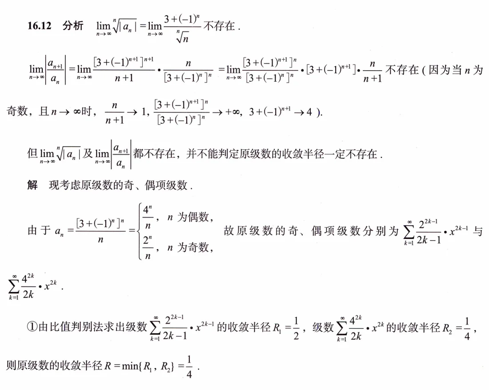
- 16.13 求 \(\sum\dfrac{x^{2n}}{2n+1}\) 在 \((-1,1)\) 内的和函数：拆成 \(S_1-S_2\) 两个子级数，各自"乘 \(x\)、逐项求导"化为 \(\frac{1}{1-x^2}\) 再积分回代（对数式），\(x=0\) 处单独定值成分段函数（印P503）。
- 16.14 数项级数求和：先对 \(\sqrt{n+1}\pm\sqrt n\) 有理化（\((\sqrt{n+1}+\sqrt n)(\sqrt{n+1}-\sqrt n)=1\)），再包装成 \(\sum n(n-1)x^n=\dfrac{2x^2}{(1-x)^3}\) 在 \(x=\frac12\) 取值。
- 16.15 \(f(x)=\dfrac{1}{x^2-3x+2}=\dfrac{1}{1-x}-\dfrac{1}{2-x}=\sum\limits_{n\ge0}\left(1-\dfrac{1}{2^{n+1}}\right)x^n\)，收敛区间 \((-1,1)\)。
- 16.16 \(f(x)=\sum\dfrac{a_n}{n!}x^n\) 满足 \(f''-f'-2f=0\)、\(f(0)=0\)、\(f'(0)=1\)：(1) 特征根 \(r=-1,2\)，\(f(x)=\dfrac{\mathrm{e}^{2x}-\mathrm{e}^{-x}}{3}\)；(2) 展开 \(\dfrac13\sum\dfrac{2^nx^n}{n!}-\dfrac13\sum\dfrac{(-1)^nx^n}{n!}\) 比系数，\(a_n=\dfrac{2^n-(-1)^n}{3}\)。
- 16.17 将所给幂级数的和函数展开成 \((x-1)\) 的幂级数：先求和函数得 \(2\sin\dfrac x2\) 型，再按 \(\sin\left(\dfrac{x-1}{2}+\dfrac12\right)=\sin\dfrac{x-1}{2}\cos\dfrac12+\cos\dfrac{x-1}{2}\sin\dfrac12\) 用和角公式拆成 \(\sum\dfrac{(-1)^n(x-1)^{2n+1}}{2^{2n+1}(2n+1)!}\) 与 \(\sum\dfrac{(-1)^n(x-1)^{2n}}{2^{2n}(2n)!}\) 的组合——"本题用幂级数来包装函数，这种包装要能识别出来"（印P505）。
易错点与技巧
- 加括号单向有效：收敛级数加括号仍收敛且和不变；加括号后收敛推不出原级数收敛，如 \((a-a)+(a-a)+\cdots\)（印P455）。
- \(\lim u_n=0\) 只是必要条件：\(\sum\frac1n\)、\(\sum\frac{1}{n\ln n}\) 通项都趋零照样发散（印P456、P464）。
- 比值、根值判别法 \(\rho=1\) 时失效，\(\sum\frac1n\) 与 \(\sum\frac{1}{(n+1)^2}\) 是标准反例；但 \(\rho>1\) 判 \(\sum|u_n|\) 发散时能断定原级数发散（\(\lim u_n\neq0\)），这条只在比值/根值法下成立，比较判别法判出的"绝对值级数发散"没有这个待遇（印P462—463、P469）。
- 莱布尼茨判别法是充分条件：\(\{u_n\}\) 不单调时级数未必发散，先拆项再下结论（例16.16，印P466）；单调性只需"从某项起"成立（例16.15 的 \(x>4\)）。
- 条件收敛的交错级数：全体正项级数、全体负项级数都发散，\(\sum(u_{2n}-2u_{2n-1})\) 这类"重组"题据此判断（例16.17，印P469）。
- 非正项级数不能直接用比较判别法：先加绝对值化正项（12 条总结第 2 条，印P472）；"\(\sum u_n\) 收敛"永远不要想当然当成正项级数。
- 幂级数端点必考：阿贝尔定理只管开区间，\(x=\pm R\) 必须代回单独判，收敛域有 \((-R,R),[-R,R),(-R,R],[-R,R]\) 四种结局（印P476—477）。
- \(\lim|a_{n+1}/a_n|\) 可能不存在：\([3+(-1)^n]^n\) 型系数要拆奇偶项分别求半径（习题16.12，印P479、P502）。
- 逐项求导收敛域可能缩小、逐项积分可能扩大，端点必须重新单独验证（印P479、P484—485；例16.24）。
- 求和函数三件事一个不能少：先写收敛域；先导后积时 \(S(x)=S(x_0)+\int_{x_0}^xS'(t)\mathrm{d}t\) 别丢 \(S(x_0)\)（下限取展开中心）；答案后面带着定义域（印P487—488）。
- 展开式在端点成立要查两条：端点处级数收敛 + 被展开函数在该端点单侧连续（例16.37 的 \(x=1\) 处 \(f\) 无定义就不能扩，印P494）。
- \(\ln(1-x+x^2)\) 型不能把 \(-x+x^2\) 当整体套 \(\ln(1+u)\) 展开——先因式分解化成 \(\ln(1+x^3)-\ln(1+x)\)（例16.36 注，印P493）。
- （数一）傅里叶级数 \(S(x)\neq f(x)\)：间断点取左右极限平均值、端点 \(x=\pm l\) 取 \(\frac{f(-l+0)+f(l-0)}{2}\)，先折回再取值（例16.38，印P495、P497）。
考点与方法补充（站注）
本节为站注，素材来自全网调研与真题统计，不是原书内容；数学事实一律以原书为准。
- 考频定位（站注·真题大数据）：本讲在数一数三属第二梯队主力——"幂级数收敛域+和函数"15 年出现 10 次以上，是大题模板户；数项级数判敛与展开式是选择填空常客；傅里叶（数一）15 年出现 5–8 次属第三梯队，但一考就是 10 分以上大题，且狄利克雷收敛定理这类低频考点近年回潮，数一考生不可裸奔。命题趋势：跨章节综合（级数×微分方程如例16.33、级数×华里士公式如例16.34、级数×泰勒定阶如习题16.4/16.5）比重上升。
- 判敛法选择决策树（站注，据原书例题归纳）：拿到 \(\sum u_n\) 先看通项是否趋零（必要条件秒杀）；再分三路——通项是幂指/阶乘结构走比值、根值；能跟 \(\frac{1}{n^p}\)、\(aq^n\)、\(\frac{1}{n^p\ln^qn}\) 比阶走极限形式比较或积分判别法；交错与任意项先加绝对值，绝对发散再回莱布尼茨或拆项。原书每道例题的"分析"栏就是这个流程的示范，值得整段精读。
- 与第 1 讲泰勒公式的衔接（站注，原书印证）：原书印P474—475 明确把幂级数讲成泰勒公式的推广——\(x^n\) 当"基"，任意阶可导函数都能展开且系数唯一。回看 L1：等价无穷小 \(\sin x\sim x\)、\(\ln(1+x)\sim x\) 本就是展开式的"只取第一项"，泰勒求极限是"取到固定阶"，本讲则是"无穷阶全收"。复习时把 L1 的七个泰勒公式与本讲定理16.17 的表对齐背，一份记忆两讲受益。
- 数项级数求和的常考数值（站注，全部可由本讲公式推出）：\(\sum\frac{(-1)^{n-1}}{2n-1}=\frac{\pi}{4}\)（例16.32 取 \(x=1\)）；\(\sum\frac{(-1)^{n+1}}{n^2}=\frac{\pi^2}{12}\)（例16.39 取 \(x=0\)）；\(\sum\frac1{n^2}=\frac{\pi^2}{6}\)（\(x^2\) 的傅里叶展开取 \(x=\pi\)）；\(\sum\frac{1}{n\cdot2^n}=\ln2\)（\(-\ln(1-x)\) 取 \(x=\frac12\)）；\(\sum\frac{n}{2^n}=2\)（\(\frac{x}{(1-x)^2}\) 取 \(x=\frac12\)）；\(\sum\frac{2n+2}{(2n+1)!}=\cos1+\sin1\)（印P494—495 原例）。大题里"顺带求个常数项级数的和"几乎必配一个幂级数包装动作。
- 悬链线预警（站注，原书印证）：原书印P494 在小结 8 式的 \(\frac{\mathrm{e}^x+\mathrm{e}^{-x}}{2}\) 处明确标注"悬链线，2023 年真题考过"——偶数阶乘、前面无 \((-1)^n\) 的通项，往悬链线想。
- 张宇方法论（站注）：原书印P471 有一段张宇原话值得抄进错题本——"做完一题，就要停下来总结一下这道题能学到什么技巧，容易错在哪里……做完同一知识点下的几道题，就要琢磨这几道题之间有没有联系"——12 条总结正是这个方法的示范。配套的还有"先判型后计算"（强化36讲第1讲主题）：本讲的"型"就是通项形状，型判对了判别法自动浮出。另一条共识：计算能力是决定分数的第一因素，本讲计算量集中在系数公式与逐项积分的分部积分上（傅里叶系数、例16.39 的表格法），眼高手低者请落笔。另注：考研圈常说的"三大计算"（极限、导数、积分）是杨超的提法，不是张宇的，别张冠李戴。
- 时间安排（站注）：本讲 55 页、39 道例题加 17 道习题，是全书体量最大的一讲之一。建议三天：第一天常数项级数（判别法全过+例16.1—16.21），第二天幂级数（例16.22—16.37+两大必背公式+小结 8 式），第三天数一傅里叶（例16.38—16.39+习题16.7/16.8）并做习题 16.1—16.17 收尾。数三考生第三天改做判敛与求和的混合限时练。
知识清单自测
自测题
1. 判定级数 \(\sum\limits_{n=1}^{\infty}\dfrac{(-1)^n}{\sqrt n}\) 是绝对收敛还是条件收敛。
查看答案
解 加绝对值后 \(\sum\dfrac{1}{\sqrt n}\) 是 \(p=\dfrac12\le1\) 的 \(p\) 级数，发散；原级数的 \(u_n=\dfrac{1}{\sqrt n}\) 单调减少且趋于0，由莱布尼茨判别法收敛。故原级数条件收敛。
2. 求幂级数 \(\sum\limits_{n=1}^{\infty}\dfrac{(x-1)^n}{n}\) 的收敛域。
查看答案
解 \(\rho=\lim\limits_{n\to\infty}\left|\dfrac{a_{n+1}}{a_n}\right|=\lim\dfrac{n}{n+1}=1\)，\(R=1\)，收敛区间 \((0,2)\)。\(x=2\) 时为 \(\sum\dfrac1n\)，发散；\(x=0\) 时为 \(\sum\dfrac{(-1)^n}{n}\)，由莱布尼茨判别法收敛。故收敛域为 \([0,2)\)。
3. 求 \(\sum\limits_{n=1}^{\infty}nx^n\) 的和函数，并计算 \(\sum\limits_{n=1}^{\infty}\dfrac{n}{2^n}\)。
查看答案
解 收敛域 \(|x|<1\)。\(n\) 在分子，先积后导：\(\sum nx^n=x\sum nx^{n-1}\)，设 \(S(x)=\sum nx^{n-1}\)，则 \(\int_0^xS(t)\,\mathrm{d}t=\sum x^n=\dfrac{x}{1-x}\)，求导得 \(S(x)=\dfrac{1}{(1-x)^2}\)。故 \(\sum\limits_{n=1}^{\infty}nx^n=\dfrac{x}{(1-x)^2}\ (|x|<1)\)。令 \(x=\dfrac12\)，得 \(\sum\dfrac{n}{2^n}=\dfrac{1/2}{(1/2)^2}=2\)。
4. 将 \(\mathrm{e}^x\) 展开为 \((x-1)\) 的幂级数。
查看答案
解 \(\mathrm{e}^x=\mathrm{e}\cdot\mathrm{e}^{x-1}=\mathrm{e}\sum\limits_{n=0}^{\infty}\dfrac{(x-1)^n}{n!}\)，由 \(\mathrm{e}^{x-1}\) 的展开式对一切实数成立，故收敛域为 \((-\infty,+\infty)\)。
5. 已知幂级数 \(\sum a_n(x-3)^n\) 在 \(x=-1\) 处条件收敛，在 \(x=7\) 处发散，判断该级数在 \(x=0\)、\(x=5\) 处的敛散性。
查看答案
解 收敛中心 \(x_0=3\)。在 \(x=-1\) 处条件收敛 \(\Rightarrow R=|-1-3|=4\)（条件收敛点必在收敛区间端点上），收敛区间为 \((-1,7)\)；这与"在 \(x=7\) 处发散"相容（端点敛散性本就要单独判）。\(x=0\) 与 \(x=5\) 都严格落在收敛区间 \((-1,7)\) 内部，而幂级数在收敛区间内部点点绝对收敛，故两处均绝对收敛。
6.（仅数学一） 将 \(f(x)=x^2\ (-\pi\le x<\pi)\) 展开为以 \(2\pi\) 为周期的傅里叶级数，并求 \(\sum\limits_{n=1}^{\infty}\dfrac{1}{n^2}\)。
查看答案
解 \(f\) 为偶函数，\(b_n=0\)；\(a_0=\dfrac{2}{\pi}\int_0^{\pi}x^2\,\mathrm{d}x=\dfrac{2\pi^2}{3}\)，\(a_n=\dfrac{2}{\pi}\int_0^{\pi}x^2\cos nx\,\mathrm{d}x=\dfrac{4(-1)^n}{n^2}\ (n=1,2,\cdots)\)（分部积分两次）。故
\[x^2\sim\frac{\pi^2}{3}+\sum_{n=1}^{\infty}\frac{4(-1)^n}{n^2}\cos nx .\]
\(f\) 在 \((-\pi,\pi)\) 内连续、在 \(x=\pm\pi\) 处左右极限相等（周期延拓后连续），故展开式处处成立。取 \(x=\pi\)：\(\pi^2=\dfrac{\pi^2}{3}+\sum\dfrac{4}{n^2}\)，解得 \(\sum\limits_{n=1}^{\infty}\dfrac{1}{n^2}=\dfrac{\pi^2}{6}\)。